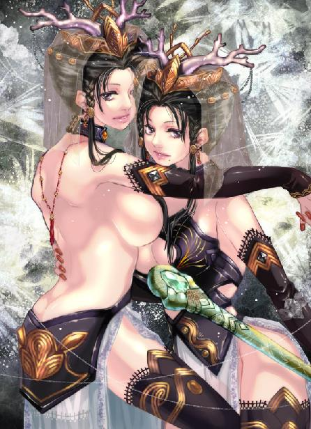

第23集·血樱冥薇
云水篇（3/4）
出版日期：2011-06-10
【本集内容简介】
月霜“岳帅之女”的身份引来祸端，太乙真宗、波斯教派、岳鸟人过往招惹的风流账，无不处处针对她，甚至连亲妹小紫也有意无意地算计着！
程宗扬被星月湖委以重任，铁骊孟非卿特别予以军事训练，便是想将他拉至江州战场。一心想上战场的月霜与星月湖一拍即合，程宗扬也因小紫的“嫁妆”而难以脱身。
但在晴州更为要紧之事，便是以飞鸟上忍的身份与剑玉姬一会，试探黑魔海的深浅！
※ ※ ※ ※ ※

封面人物：虞白樱、虞紫薇
晴州位于大陆最东端，从地图上看，与其说漫长的海岸线伸入东海，不如说海水侵入陆地，形成一片辽阔的海湾。海湾三面被陆地包围，称为晴州内海，最宽处超过四百里。云水巨大的水量使晴州内海一半都是淡水，海湾月牙状的缺口处，有一座丁字形岛屿与外海分开，将风浪隔绝于外。无论外海风浪再大，进入内海就变得风平浪静。对晴州人来说，这个天然良港就是他们的聚宝盆。
船只停在一片红树林内，程宗扬拿起从楼船上带下来的望远镜，看向海中的岛屿。
晴州内海散布着大量岛屿，一些大岛还有市镇和码头。臧修私下透露过，有几座岛屿是海盗们交易的场所。其余小岛大都被人购置，成为各家商会和富豪的产业。
眼前这座岛屿面积并不大，岸边生长着海滨常见的疾藜丛和野豌豆苗，岛内高大的乔木间露出房舍一角。竹篱瓦舍的建筑，普通得不能再普通，但如果泉贱人没有说谎，那里便是黑魔海隐藏在晴州的巢穴。
程宗扬慢慢移动望远镜。岛侧有一个小小的码头，一条双桅帆船靠在岸边，显然岛上有人，但始终没有看到有人走动，更没有见到一丝灯光。
程宗扬心里嘀咕：黑魔海的人不会也和鬼王峒一样，都是属蝙蝠的吧？
泉贱人说，剑玉姬吩咐过，一旦飞鸟上忍抵达晴州，只要在岸边发出讯号，岛上就有人来接应。自己从广阳到晴州一路都是乘船，与外界的通讯处于隔绝状态，最后一次与剑玉姬联络还是在广阳启程的时候，透过游婵告知黑魔海，东瀛来的忍者飞鸟熊藏与御姬奴离开广阳，前往晴州。信息越少越不容易露出马脚，剑玉姬就算有通天彻地之能，也不可能从有限的信息中判断出自己是假货。
眼下自己人已经到了晴州，想见到剑玉姬的真面目并不困难，麻烦的是见面之后怎么办。如果按照死奸臣的说法，剑玉姬能轻易击杀华妙宗的宗主，修为直比王哲，就这么把她引出来不叫引蛇出洞，纯粹是放虎出笼，将自己的实力全拼上也是白搭。
随行来的汉子坐在船尾，警觉地望着岸上。这些汉子都是臧修的手下，凭借鹏翼社的身份在晴州隐藏多年，忠诚绝无可疑。
与他们接触过，程宗扬才知道萧遥逸为什么那么急切地兵临湖上，与王茂弘讨价还价。王哲曾说过，岳鹏举的星月湖大营是他见过的第一强军，这些一身本事的汉子怎么可能甘心做一辈子的贩夫走卒？现在萧遥逸重新在江州占据了一片天地，这些汉子虽然尽力克制，言谈间仍不免流露出几分激动。毕竟他们在草莽中埋没多年，终于有机会让岳帅的战旗在六朝的天空重新飘扬，怎么能不激动呢？
但也正是因为这个原因，让程宗扬更加慎重。孟非卿马不停蹄地筹备江州之战，再节外生枝招惹出黑魔海，打乱了星月湖的计划，就算能干掉剑玉姬也得不偿失。
程宗扬放下望远镜，决定今天晚上就到这里。等见过孟非卿，再商量要不要引剑玉姬出来。
就在这时，两个人影突然从岛上出来，一前一后登上船只，接着那条双桅帆船升起轻帆，驶离码头。
程宗扬目不转睛地盯着船只。那两人前面一个身材胖大，头发挽成抓髻，似乎是个中年仆妇，后面那人却是自己见过的——泊陵鱼氏的无夷公子，鱼无夷！
※ ※ ※ ※ ※
晴州城北，铜狮巷。
两丈宽的台阶上竖着一座三层门楼，黑漆大门上绘着两只雪隼，檐下挂着一排气死风灯，上面写着“雪隼佣兵团”的字样。门洞内放着两行长凳，十六名劲装大汉整整齐齐坐在凳上，目不斜视，两手放在膝上，腰背挺得笔直。仔细看时，那些汉子屁股离凳面还有寸许高度，一个个都身体悬空，稳稳扎着马步，脚下纹丝不动。
虽然已是深夜，院中仍亮着灯火。刚从广阳赶回的佣兵汉子们正聚在厅中，享用着他们返回晴州的第一顿晚餐。
敖润一回来就去见副团长石之隼，月霜和冯源都在厅中。月霜从小在军中长大，对饮食没有什么挑剔，吃得也极快。冯源因为辟谷，只吃了点菜蔬就放下筷子。
“副队长，”冯源道：“我去把老张的东西收拾一下。”
月霜也放下筷子，“等等。我还有点钱，你给老张家里送去吧。”
“那怎么成？”
“不用多说了，”月霜站起身，“他家里还有父母子女要养。跟我来。”
“哎。”冯源想起副队长虽然不富，但老程很有些钱的样子，便答应下来。
佣兵团的女子并不多，月霜偏院住了一间厢房。她拣出钥匙正要开锁，忽然又停住了。冯源在后面看到她颈后的发丝像遇到危险的小猫一样突然竖起，不由一愣。他刚张开口，月霜一手朝背后伸来，打了个噤声的手势，美目紧盯门锁。
门上的铜锁已经两个月没有开过，上面有一层薄薄的灰尘，看起来并没有什么异样，但落在月霜眼中，立刻便看出这只锁刚刚被人动过。开锁的人肯定是个大行家，留下的痕迹极浅，如果不是她在六扇门待过，锁上又积了灰尘，未必就能看得出来。
月霜一手按住剑柄，全副精神都集中在门后。那个人并没有走，此刻正在房中等着自己回来。
“火。”月霜悄悄在身后写了个字，让冯源小心戒备，随时准备施出火法。
冯源有些紧张地点了点头，也不管月霜能不能看到，然后急速念诵咒语，准备施法。
就在月霜准备出手的刹那，一只野猫突然蹿出来，“喵”地叫了一声。
“呀！”冯源大叫声中，双手挥出一道火光。
“喵呜！”那只野猫被火焰扫中，尾巴顿时着了起来，惨叫着扑到门上。
月霜气得大叫：“冯大法！你个笨蛋！”
冯源施过法后，脸色一下变得苍白，他咽了口唾沫还没开口，紧锁的房门突然打开。一只玉手伸来，挟住着火的野猫扔进室内，接着“叮”的一声，横臂挡开月霜的利剑。
房中出来的是名女子，她头发从两鬓和脑后向下挽起，在额顶用粉色的发带扎住，髻上簪着一排扁宽的木笄。身上穿着黑色的广袖短衣，腰带极宽，上面扎着金色系绳，在腰侧垂下两条穗带。脚上穿着白色布袜，踏着一双木屐。
晴州港海客极多，冯源一眼认出这女人挽的是东瀛倭人的半玉髻，衣服也是东瀛式的吴服。她脸上戴着黑色面罩，发丝遮住双眉，只露出一双眼睛，手中用来挡住长剑的是一支两尺长的竹杖，两端包着铜头。
月霜厉声道：“你是谁！”
那女子默不作声，短杖在掌中一旋，敲在月霜剑锷前寸许的位置。月霜虎口剧热，几乎丢开长剑。她咬紧牙关，长剑犹如飞凤，剑光霍霍朝那女子逼去。蒙面女子身形微闪，从门口闯出，露出背后一只包裹。
“原来是个贼！”月霜娇叱道：“把东西放下！”
蒙面女子竹杖飞舞，杖端的铜头不断击在剑上，挡住月霜的攻势。冯源见识过月霜的功夫，比起敖老大只稍差一线，可此时长剑被这女子用短棍一击，立刻歪到一边，显然功力逊了一筹。
冯源一边运着法诀，一边扯开喉咙叫道：“来人啊！有贼！”
月霜一连十余招都被那女子挡住，眼看她身形游鱼般从剑影间逸出，随时可能从自己剑下溜走，不由银牙一咬，长剑陡然放出光华。
月霜这套真武剑是王哲亲传的破敌招术，属于太乙真宗绝技之一，只是施展时极耗真元，限于体内的寒毒，月霜平常很少使用。但那女子拿的包裹是自己要紧的物品，无论如何也不能被这个来路不明的女子夺走。
月霜长剑斜挑，剑光撕开黑暗，闪电般将走廊照得通明。蒙面女子乌黑的眸子在剑光下闪亮起来，她竹杖划了半个圆弧，击向月霜的剑锋。
月霜娇叱一声，一招斩妖，剑走中宫，剑上吞吐出无坚不摧的剑气，斩在竹杖正中。“叮”的一声，蒙面女子短杖外面的竹筒碎裂，露出里面铜制的内胆。
月霜一不做二不休，剑气再涨，将铜杖一斩为二。
中空的杖身跌出一串古怪的物品，有绳索、抓钩、暗器……但这会儿还没来得及使用，全部作废。
蒙面的东瀛女子被真武剑逼在下风，短短三招就数次遇险。月霜剑势越来越凌厉，剑气纵横间，将她的退路尽数封死。眼看失去短杖的东瀛女子就要大败亏输，月霜炽热的丹田突然升起一丝寒意，她情不自禁地打了个冷颤，剑上光华陡然一黯。
蒙面女子抓住破绽，一直藏在袖中的左手猛然翻出，与月霜对了一掌。
双掌相交，月霜脸色一下变得雪白。她冒着寒毒发作的风险使出真武剑，却没料到寒毒会发作得这么快。如果面对寻常的江湖好手，她还有机会慢慢调理气血，但此时碰上真正的高手，立刻吃了大亏。右手的真武剑招数只使了一半就无力支撑，剑上耀眼的光华迅速退去。
掌力重重撞入经脉，带来血脉逆行般的剧痛。月霜苍白的面孔泛起一抹病态的嫣红，只要对手的真气侵入丹田，自己立刻会受到重创，能不能保不住性命还在两可之间。
蒙面女子冷冷盯了她一眼，已经侵入经脉的掌力突然撤回一半，余力仍然将月霜震飞。接着蒙面女子身体一旋，穿着木屐的纤足踢在冯源胸口，借力飞上檐角。
冯源滚地葫芦似的滚到一边，但他那声叫喊已经惊动了佣兵团，几名好手早已攀上屋檐，截击这个不开眼的蟊贼。
堂堂佣兵团竟然被贼偷了，说出去是让佣兵团丢人。
蒙面女子风一样从屋脊掠过，木屐在瓦上发出清脆的“咯咯”声。两名抢过来阻拦的佣兵汉子刚一交手就被她竹杖击中要害，痛叫着从屋顶跌下。另外几人距离尚远，来不及合围。眼看那蒙面女子就要掠过高墙，一道银光流星般从佣兵团主楼飞出，射在东瀛女子肩后。蒙面女子身形微微一晃，只差了一步没有跨上墙头，跌落在地。
眼看佣兵团的汉子将要截住这个女贼，忽然一根绳索破空而出，越过高墙，蒙面的东瀛女子挽住绳索，借势跃到墙上，接着张开鸦黑的双袖，背着包裹悄然没入夜色。
冯源摔在阶下，饶是那东瀛倭女没想要他性命，这一脚也踢得他胸口剧痛难当，险些闭过气去。他龇牙咧嘴地捂着胸口，半晌才叫道：“火！火！”
月霜的房间浓烟四起，那只野猫不知引着什么东西，整个房间都烧了起来。佣兵团的汉子们纷纷涌出，有些救火，有些去追那个女贼，乱成一片。
月霜被蒙面女子一掌震退，这会儿靠在柱子上，脸色雪白。她咬着失去血色的唇瓣，身体微微战栗，良久才透出一口气，面色渐渐恢复正常。
敖润听到叫声就从主楼跳下，但还是晚了一步，连片衣角都没捞到。他跃上墙头吼道：“狗日的！哪儿来的蟊贼，敢打我们雪隼团的主意！”
“老大，”冯源捂着胸口道：“你瞧瞧这个……真古怪。”
旁边一只手掌伸来，从冯源手中拿过那枚从竹杖中掉落的暗器。冯源打了个哆嗦，回过头才松了口气，“石团长。”
雪隼佣兵团的副团长石之隼挟住暗器，反复看着。他身形细瘦，穿着件宽大的衣衫，似乎一阵风都能吹走。但晴州的佣兵行都知道，雪隼团的石二爷一手暗器功夫出神入化，与大佬薛延山合力打下雪隼团的名头。
冯源道：“那女贼有点像倭人，会不会是那个什么浪人……”
旁边见过那倭女的同伴也道：“是有点像。这些浪人也太浪了吧？敢惹到我们雪隼团的头上？”
石之隼仔细看了半晌，把那枚暗器放在鼻下嗅了嗅，“是东瀛忍者。”他弹开暗器，搓了搓手指，然后道：“叫老敖回来吧，既然是东瀛来的忍者，他追上也没用。”
※ ※ ※ ※ ※
晴州河网密布，水运极为发达，临河的宅院大都有自己的码头。程宗扬乘船从晴州内海直接驶到自己居住的宅院后面，没等停稳就跳下船，快步走进院内。
“死丫头，你猜我遇见谁了？咦？你怎么浑身都是水？”
“人家刚才出门了嘛。”小紫眨了眨眼睛，好奇地问道：“程头儿，你遇见谁了？”
“鱼无夷！”
程宗扬把自己看到的情况说了一遍，摸着下巴道：“看来姓鱼的与黑魔海关系不是一般的深呐。”
小紫用巾帕抹着发丝的水珠，眼珠一转，“听鱼家的傻瓜说，武二那个大笨瓜杀错了人，死的倒霉鬼就是他弟弟。”
“没错，西门庆那个大贱人肯定是黑魔海的人。”程宗扬道：“鱼家和黑魔海早有勾结，所以姓鱼的才千里迢迢跑到五原城和他见面。”
鱼家与黑魔海的关系是合作，还是像太湖盟一样被强行收入黑魔海麾下，这个并不重要。问题是他们走到一起有什么图谋？程宗扬拧眉思索良久，眼前忽然一亮，“说不定姓鱼的与西门大贱人见面，是为了潘姐儿！”
想通其中关键，程宗扬思路一下清晰起来。武二郎本来是为了找西门庆的晦气，替哥哥武大报仇才潜入五原城。西门庆是醉月楼的座上客，与苏妖妇也不陌生，武二郎在采石场的事不可能瞒过他的耳目，那么西门庆为什么没有趁机除掉武二，消除这个隐患呢？
联想到鱼家在云水拦截光明观堂座船的举动，答案便呼之欲出了：西门庆没有趁机除掉武二，是他在拿武二当诱饵，引潘金莲上钩！
不出西门庆所料，当小香瓜偷跑到南荒时，潘金莲因为武二郎来到五原城。西门庆和鱼无疾明知道她就在城内，还公然在鸳鸯阁宴饮，显然是一个专为潘金莲设计的陷阱。只是他们没料到武二这头猛虎会突然出笼，击杀鱼无疾、血溅鸳鸯阁，让西门庆的苦心策划成为泡影。
程宗扬突然大叫一声：“不好！”
小紫皱了皱鼻子，“你叫得好大声。”
“潘姐儿要倒霉了。”程宗扬道：“你也见过，鱼无夷修为虽然不弱，但比起潘姐儿还差了老大一截。他怎么有胆量去劫光明观堂的船？而且一点面子都不给潘姐儿留？”
小紫眼睛慢慢亮了起来。
“结论只有一个，黑魔海肯定有对付光明观堂的手段，只不过必须与鱼家合作。”程宗扬道：“所以开始是西门庆与鱼无疾联手，然后是鱼无夷和黑魔海那个年轻人联手。我敢肯定，他们用的不是什么光明正大的手段，极可能是鱼家的毒药和黑魔海的邪术合用。嘿嘿，潘姐儿运气真好，第一次有武二郎搅局，第二次又撞上我们，黑魔海和鱼家两次都没有机会出手。”
小紫笑道：“程头儿，你好聪明哦。”
“哼哼，我的智慧平常舍不得用！现在你知道它有多高明了吧！”
“程头儿，我好崇拜你哦。”小紫跳过来拥住程宗扬的脖子，笑靥如花地说道：“不要生气啦。”
程宗扬正在得意，闻言不由一愣，半晌才叫道：“我干！你又做什么了？”
程宗扬一把掀开帘子，只见泉玉姬背对房门，屈膝坐在箱内。她头发梳成倭式的半玉髻，用粉红的发带扎住，半边衣服脱到腰间，雪白的肩膀裸露着，里面嵌着一枚古怪的暗器。暗器有两寸长短，形状像一片羽毛，针状的羽管深深刺进肌肤，正不断吸食鲜血。
“怎么回事？”
小紫道：“人家让她去取一件东西，谁知道她那么笨，惊动了佣兵团的人。要不是我扔了只猫，她说不定就被人捉住了呢。”
程宗扬回过头，“死丫头，你们搞什么鬼？跑到佣兵团偷别人东西？还扮成忍者？是不是怕我麻烦不够多啊！”
小紫嘟起小嘴，“人家只是拿来看看。”
“那是佣兵团！不是菜店！你以为敖润他们都是白给的？让你们想来就来，想去就去？”程宗扬停顿了一下，“月霜怎么样？”
泉玉姬道：“奴婢与她对了一掌，并没有使力。”
程宗扬哼了一声，“这是什么东西？银鹅毛吗？”
小紫道：“雪隼佣兵团副团长石之隼用的银隼箭。中间是空的，能够放血。外面还有倒勾，一射中就拔不出来了。”
小紫拿出一柄小刀，朝泉玉姬招了招手，“过来吧。”
“古吗朴思蜜达，谢谢主人。”
泉玉姬屈膝跪在小紫脚边，弯下腰。小紫割开她伤口的皮肉，将那枚银隼箭从她肩头取了出来。泉玉姬咬紧牙一声不吭，鼻尖却渗出点点冷汗。
小紫翻掌在她颈侧一切。泉玉姬昏迷过去，伤口鲜血猛然溅出。
程宗扬拿过那枚暗器，只见银制的羽管上布满倒钩，如果上面再喂些毒药，泉玉姬的伤势就不只这么一点了。小紫对泉玉姬溅血的伤口理都不理，似乎死了也与她无关，最后还是自己看不过去，点了泉贱人的穴道，帮她止血。
等泉玉姬呼吸平稳，程宗扬抹去指上血迹，“你们拿了什么东西？”
“呶。”小紫指了指案上的包裹。
包裹并不大，似乎没有装多少东西，看起来有点眼熟。程宗扬猛地想起，从王哲军中离开时，参军文泽给自己和月霜各自准备了马匹和食物，当时这个包裹就在月霜的马上。
包裹内是几件平常衣物，看起来像是小孩子穿的，但都是军服，衣角带着左武第一军的标记。衣物下面放着一只婴儿用的金锁，但和一般的婴儿金锁相比，式样有些古怪，尤其是上面嵌的宝石，对婴儿来说太贵重了。
程宗扬心里一动。这些东西多半是月霜小时候用过的，如果是这样，那只金锁很可能是岳帅留下的遗物。死丫头嘴上虽然不说，心里一直惦记着，毕竟姓岳的什么都没有留给她。
程宗扬放软口气，“拿就拿吧，还伤了人。你让我怎么见老敖他们？”
“都是那个新罗贱人太笨了，连拿东西都做不好。不要生气啦。”说着她抱住程宗扬的手臂，在他嘴上亲了一口。
心里那点气愤被她一亲，立刻烟消云散，程宗扬佯怒道：“再亲一口！”
“小气鬼。”小紫甩开他的手臂，然后解开湿衣。
“又来刺激我！”程宗扬火大地瞪着死丫头。
小紫吐了吐舌头，脱掉外衣，露出雪白的胸乳上龙角状的皮甲，还没等他看清就旋身披上衣物。
程宗扬叫道：“想脱给我看，你就穿慢点啊！”
小紫咯咯笑道：“下次请早。”
程宗扬朝箱子看了一眼，“泉贱人会不会知道鱼家的事？”
“撒谎！”
程宗扬叫道：“我说什么就撒谎了！”
小紫撇了撇殷红的小嘴，“你明知道她不会知道，还这么说，不就是想找个理由玩玩她吗？”
程宗扬被揭穿心事，不由恼羞成怒，“胡说！她正受伤呢，我有那么禽兽吗？”
小紫大度地摆摆手，“你想玩就去玩吧，我就装不知道好了。”
程宗扬赌气道：“不玩了！我要抱着你睡觉！”
“程头儿好坏，又想睡人家。”
“喂，别忘了你是我的侍寝奴婢！跟我睡觉是天经地义！”
小紫很听话地扑到程宗扬怀里，“那好吧！”
“哇！这么乖！”
程宗扬毫不客气地抱住小紫扑到床上，忽然肩上一麻，接着胸、腹、腰、腿都被她封住穴道。
小紫翻过身，把他身体摆平，然后躺在他胸口上，像盖被子那样把他手臂拉起来绕在自己腰间，一脸幸福地说道：“程头儿，你身上好暖和哦。”
程宗扬哭笑不得，“死丫头，你太过分了吧？”
“你不是要人家陪你睡觉吗？哎呀，你顶到人家屁股了。”小紫手掌伸到臀下，把他阳具推到一边，笑道：“程头儿，你真的好硬呢。”
说着她小手一松，那根阳具又直挺起来，小紫拨弄了几下也没按下去，于是分开双腿，将火热的阳具放在腿间。
阳具隔着衣物摩擦着少女细嫩的肌肤，程宗扬心头一阵激荡，在她耳边小声道：“死丫头，什么时候给我吃？”
“其实很简单啊。”小紫舒服地闭着眼，悠然道：“就像刚才，如果是你点住人家穴道，人家就乖乖给你吃了。”
程宗扬悻悻道：“我一辈子也没你那么奸诈。”
“程头儿，你好谦虚啊。”小紫闭眼笑道：“你整天都和雪隼团的人在一起，是不是想把他们收过来？”
程宗扬停顿了一会儿，慢慢道：“也许你不明白。我们这一代都把享乐放在生活前面，真正有野心的人其实很少。在建康时我经常想，六朝生活这么太平，一眨眼就过完一生，不也很幸福吗？”
小紫没有说话，像睡着一样静静闭着眼。
程宗扬自言自语道：“虽然我不知道有多少，但我相信，这个世界曾经有很多像我这样的人。开始我不明白那些人为什么很少留下自己的名字，后来我想通了。和这个世界的人相比，我们并没有太多优势，甚至处于劣势。论能力，像我这样本来就不怎么出众的人，凭什么和王茂弘、谢安石那样的人中龙凤相比？把我们这种人扔在这里，大多数只有被淘汰的命运。偶尔有几个幸运儿，像你爹爹那样，可能得到一些意想不到的帮助，突然间光彩夺目，可即便是你爹爹，再过五十年、一百年，还有多少人记得他？”
小紫呢哝道：“人家才没有爹爹呢。”
“好吧，就说姓岳的。他武功有多高不好说，但结的仇家肯定是天下第一。那么多人恨不得吃他的肉、喝他的血。可等他的仇家也都死完了，还有什么能留下来呢？”
“很多人可能都在人群中默默无闻地过完一生，最多过得比别人好一点。对于我这种没什么野心的人来说，这样也没什么不好。所以我以前总提不起精神做事，反正那些事不是被人做过，就是徒劳无功，还不如多享乐几天。”
程宗扬叹了口气，“直到那天被苏妖妇打醒，我才知道眼前的太平日子就像蜡做的城堡，一点小火苗就能把它融化。想要安安稳稳过日子，就要把城堡变成水泥的。等我真想做事的时候，才发现身边可用的人太少了。会之他们是殇侯的人，小狐狸是星月湖的人，云老哥是云家的人。我不是信不过他们，但我需要自己的班底，和任何人发生利益冲突仍站在我这边的人。”
“敖润几个不是什么名声显赫的大人物，但都是热血汉子，值得一交。”程宗扬笑了起来，“还有那个平山宗的大法师，他的火法倒让我想出一件东西，找个机会试一下……喂，死丫头，你不会真睡着了吧？”
“不要吵。人家正在考虑要不要让你吃……”
“我说着玩的。”程宗扬小声道：“你气血还没有恢复，再流血我可舍不得。”
小紫在他胸口动了一下，“你可以去采六扇门那个女捕快的花啊。”
程宗扬哼了一声，“你以为我是精虫上脑的大淫虫吗？”
“不是吗？”
“闭嘴！”程宗扬气哼哼道：“反正今晚抱着你睡觉就够了。”
“不要后悔哦。”
※ ※ ※ ※ ※
从黑甜的梦乡中醒来，程宗扬睁开眼睛，一缕乌亮的发丝垂到自己颈间，小紫伏在自己胸口睡得正熟。晨曦从窗棂透入，她娇美的面孔犹如海棠。程宗扬忍不住亲了她一口，忽然发现自己穴道已被解开。
程宗扬露出坏笑，手掌毫不客气地伸进她衣内，抚摸她细嫩的肌肤。
刚摸了一把，房门突然响了两下，臧修在外面道：“公子，孟团长刚回来，请公子去总社见面。公子？起来了吗？”
一直闭眼装睡的小紫“咯咯”笑了起来。程宗扬气恼地在她脸上摸了一把，“笑什么笑！有我摸你的时候！”一边转头道：“行了行了，我知道了！孟老大也真是……晚半个时辰回来不行啊？”
※ ※ ※ ※ ※
鹏翼总社在晴州港的西马长街上占了两座院子，门前的青石路面被车轮轧出两道半尺深的车辙。络绎不绝的车马从院中驰出，铁制的轮毂在车辙内发出闷雷般的响动，载着客人和货物奔向四方。
程宗扬一到门前，孟老板就亲自迎出来，满面春风地笑道：“建康一别，今日又在晴州相见！程公子多多发财、多多发财！”
程宗扬知道孟非卿是做给外人看的，当下也拱手寒暄，一边客套，一边与孟非卿一道进入院内。
孟非卿刚回晴州，立刻邀程宗扬见面，他脸上带着笑意，口气轻松地说道：“这几天周围有不少人盯着。临安刑部的捕快，枢密院、太尉府的官差，还有其他地方安插的眼线不下十几股，真够热闹的。”
鹏翼社往江州运送粮食武器的事没有瞒自己，程宗扬当然知道周围为什么有这么多临安眼线，“宋国怀疑到这里了吗？”
“树大招风。有人从云水运东西，当然要从我们鹏翼社查起。”孟非卿道：“可惜他们晚了半个月。如今我们鹏翼社无论船行还是车马行都干干净净，让他们查不出半点毛病来。”
鹏翼社院内车水马龙，客户往来不绝，载货的、远行的，到处人声鼎沸、热闹非凡。进了后院，外面轻松热闹的气氛陡然一变。孟非卿收起笑容，雄狮般的头颅不怒自威。
一名男子站在台阶上，下面一群打扮各异的汉子钉子般站得整整齐齐。他们有的是小贩，有的是农夫，有的是将军，有的是厨子，还有一个竟然穿着官服，身份是某个县的主簿。但此时聚在一起，每个人都有着同样的气质：属于军人的气质。
“杜元胜！”
一名提着秤杆的汉子挺身出来，“到！”
“马一鸣！”
“到！”一个穿着粗布衣服的农夫上前与同伴站在一处。
“曹之安！”
“到！”
“高二虎！”
“到！”
男子翻过一页，“六营三连，苏骁！”
一个戴着平顶皮冠的将军跨出一步，“到！”
“路大冬！”
下面有人道：“路中尉化名加入左武第一军团，半年前在塞外遇难！”
男子用朱笔勾了一下，继续念道：“沈传玉！”
“到！”
“苟立德……”
孟非卿边走边道：“这些都是我们星月湖大营的兄弟，各行各业的都有。那边的苏骁原来是六营的上尉连长，在秦军已经做到右庶长的爵位，佩戴将印，带的兵比我们星月湖大营都多。听说江州起兵，丢下将印便来了。”
程宗扬道：“我还看到有个小贩，好像是卖鱼的？”
孟非卿道：“他叫杜元胜，当年和苏骁并称六营双雄，文武双全。星月湖大营取消后，苏骁北上咸阳，杜元胜去了临安，在钱塘门外做了一名鱼贩，隐姓埋名十五年，为岳帅看守衣冠冢。谢老三的骨灰也是他亲手埋的。”
“哦……”程宗扬又朝他们看了一眼。这些都是有故事的人，每个人的经历都是一部传奇。但在这里，他们都是星月湖大营的一分子。
程宗扬忍不住道：“你们付出这么多，究竟为了什么呢？”
“小狐狸没有和你说过吗？”
“小狐狸说，他有一个梦想。孟老大，你也有梦想吗？”
“有。”孟非卿道：“我们兄弟可以抛弃高官厚禄、荣华富贵，可以忍辱负重，可以十余年默默无闻，只因为我们有一个梦想，梦想有一天能聚集到岳帅旗下，说上一声：日出东方，唯我不败！”
孟非卿把手臂横到胸前，微微昂起头，“让天地八方都能听到！”
这一刻他虽然还是商人打扮，威严的神情却如同指挥千军万马摧城拔寨的统帅，低沉的声音让人想起隆隆战鼓。
程宗扬与孟非卿接触并不多，但能看出他是一个极端冷静的人，这时看到他眼中情不自禁流露的渴望，不禁为之震撼。让天地八方都能听到，孟老大的气魄真不是盖的。
良久，程宗扬道：“我很羡慕你们能有这种勇气。”
“你不相信我们能成功吗？”
程宗扬望着那些军士坚毅的目光，“我相信你们能成功，甚至开创出一个属于你们的时代。我羡慕你们，是因为我没有抛开一切的勇气。我想要的太多了，不像他们一样纯粹。”
孟非卿忽然道：“你的梦想呢？”
程宗扬想了一会儿，“想要很多很多钱，还有很多很多美女，快快乐乐过日子，这个算不算？”
“当然算。”孟非卿笑道：“要实现这个梦想也不容易，恐怕比我们的梦想做起来还难点儿。”
“可不是嘛。”程宗扬叹了口气，“想过太平日子怎么这么难呢？”
“说起太平日子，听小狐狸说，你和王大将军见过面？”
“在草原见过一次。”程宗扬想了一会儿，“王大将军身材虽然不高，但是我见过最高大的人。”
“王紫阳身为太乙真宗掌教，却抛开龙池的无上尊崇投身军伍，十余年间餐风露宿、四处征战。”孟非卿道：“我孟非卿佩服的人不多，王大将军算是一个。”
“小狐狸说你们查到一些情况，说王大将军是因为背后有人捣鬼，才在草原上全军覆没，是不是真的？”
孟非卿表情严肃起来，“左武军追逐兽蛮人进入草原之后，来自后方的粮食供应就越来越少。驻扎在塞上的第二军团多次催讨，粮草非但没有补充，反而彻底断绝。决战之前，左武军已经断粮一月有余。”
程宗扬想起在王哲军中尝过的马肉，追问道：“为什么会这样？有人断掉了左武军的补给？”
“何止如此，”孟非卿冷冷道：“据我所知，大战之前，有人故意把左武军的行军机密泄漏出去。”
程宗扬心头一震。王哲麾下的左武军第一军团力敌五个罗马军团，直到马其顿军团在背后出现才宣告不支。当时自己没有留意，现在想起来，罗马军团能在偌大的草原上找到左武军的位置，进行大军迂回、前后合击，没有准确的情报怎么可能做到？
王哲不计生死在外征战，却被人在背后暗算，程宗扬越想越怒，“是哪个王八蛋干的！”
“正在查。王大将军战功赫赫又统率强军，累年因他升官发财的不知有多少，没想到却被小人暗算。”孟非卿森然道：“捉到此贼，孟某绝不饶他！”
“会不会是他的仇敌干的？王大将军有什么仇家？”
孟非卿摇了摇头，“据我所知，王大将军从无私怨。”
从无私怨……岳鸟人听到还不羞死。程宗扬忽然皱眉，“不对！既然没有私怨，为什么还会有人针对他呢？”
孟非卿扭过头。
“王大将军在边塞领军，不在朝中争权夺利，他若打了胜仗，后方一班人都有功劳可分。没有王大将军，这种好事去哪儿找呢？如果是朝中有人陷害王大将军，那不是自毁长城吗？”
“王大将军出事，对谁最有利？”程宗扬自问自答，“不会是朝廷里当官的，而是和他打过仗的人。”
孟非卿神情微动，“接着说。”
程宗扬摊开手，“我只是从常理推断。既然王大将军没有私怨，那么就是公敌。王大将军又不打算清君侧，他的公敌不会是朝中官员。”
孟非卿似乎想到某个人，脸色忽然凝重，过了会儿道：“不会。绝不会是他！”
“谁？”
“金蜜镝，天子驾崩前指定的四位辅政大臣之一。你说的不错，王大将军殒命，对朝中权力纷争没有什么影响，得利最大的只有塞外蛮族，也只有他们最想让王大将军死。而这位金蜜镝……”孟非卿缓缓道：“原本是匈奴人。”
别人穿越都能开金手指，轮到自己却天知道穿越到了哪个位面的平行世界。自己历史知识本就有限，这个世界的历史又被搅得似是而非。金蜜镝是哪个鸟人？匈奴人……汉……辅政大臣……程宗扬脑中猛然一亮：难道是金日磾？那个三只眼的马王爷？这个自己还有点印象。
程宗扬叫道：“不可能是他！”
汉武帝托孤的辅政四大臣里，两个谋反被杀，另一个霍光权势滔天，一手废立皇帝，只有匈奴出身的金日磾始终对汉王室忠心耿耿。
“公子怎么能这么肯定？”
程宗扬当然不能说自己是从历史上得出的结论，只好道：“不会这么明显，说异族就出来个匈奴大臣吧？”
孟非卿追问道：“以公子之见呢？”
“如果我是泄密那个人，最好的办法就是找个替罪羊。一个异族出身的辅政大臣无疑是最好的靶子。”程宗扬飞快地思索着，“说不定我还会故意放出风声，称匈奴将在入冬之后南侵。就算是为了避嫌，金蜜镝也会暂时交出权力，更方便我来动手。”
说着程宗扬心里也有点没底。秦桧都变了副模样，谁能保证金蜜镝一定忠诚？也许是他死得早，没有被霍光扣上反贼的帽子。
程宗扬道：“洛阳掌权的是哪位？”
“大司马大将军霍子孟。”
这位八成就是霍光，霍去病的弟弟，历史上第一位真正的权臣，执掌汉朝权柄二十年。
孟非卿沉默片刻，“公子猜的没错。洛阳已经有匈奴入侵的传言。”
程宗扬叫道：“这也太巧了吧？设下这个计策的人心肠够歹毒，算准这件事上金蜜镝无法自辩，无论怎么说都只会越描越黑。我要是金蜜镝，唯一免祸的手段只有避嫌引退。”
“所以绝不会是金蜜镝。”孟非卿提声道：“郭盛！”
刚才点名的男子转过身，脚跟一并，向孟非卿敬了个礼，“到！”
“通知洛阳，让他们查出金蜜镝告病后是谁接管左丞相的权力。”
“是！”说着他递上花名册，朗声道：“六营第四批回营人员点名完毕，应到四十七人，实到三十九人。请团长下命令！”
孟非卿走到阶前，目光从众人身上一一扫过，简短说道：“诸君。星月湖大营的战旗在江州上空飘扬，岳帅未完成的心愿将由我们达成。”他抬起手臂放在胸前，沉声道：“日出东方，唯我不败！”
阶下那群汉子都抬起手臂，齐声应道：“日出东方！唯我不败！”
“出发！”
已经点过名的众人各自分成队伍，以不同的身份汇入外面的人群。一个月之后，他们将以星月湖将士的身份在江州重新出现。
※ ※ ※ ※ ※
孟非卿目送众人离开，然后领着程宗扬进入内堂，“请坐。”
“我自己来吧。”程宗扬拿过茶壶给自己泡了杯茶，随手给孟非卿也倒了一杯。
孟非卿接过茶杯，“你倒不客气，反客为主了。”
程宗扬笑道：“我昨天听了段书，把你们八兄弟都编进去了。”
孟非卿露出一丝无奈的苦笑，“小狐狸在江州闹的声势太大，那帮说书的打听出一鳞半爪，再加上一通编排，我们兄弟在他们嘴里只有三分像人，倒有七分像是妖怪。”
程宗扬笑道：“孟老大这几天不会真的忙着斩蛟杀虎、取宝藏吧？”
孟非卿双手握住茶杯，慢慢抿了一口，“这一个多月，我只做了一件事：借钱。”
程宗扬一愣，“社里资金周转不过来？”
“比那个多。”孟非卿道：“二十万金铢，每月四分息，一年还清。”
“二十万金铢？月息四分？”程宗扬怪叫道：“老大！你借谁的高利贷啊！这可是四百万银铢！一年利息将近本钱的一半！”
孟非卿道：“拿到手的只有十万多点。四成八的利息已经先扣掉了。”
“孟老大，你借这么多钱干嘛？”
“还不是为了江州。”孟非卿道：“五万石粮食、够五千人装备的兵甲，已经用掉了三万金铢。”
“还有七万呢？”
孟非卿道：“你不会真以为我们两千兄弟就能跟十万宋军死磕吧？五万金铢用来雇佣一千名佣兵，剩下的还要招募五千名守城的壮丁，两万金铢已经很吃紧了。”
程宗扬稳住情绪，“这么说，江州一战打下来，你们要花费二十万金铢？江州和宁州加起来，一年收入有多少？”
“江、宁二州每年岁入六万金铢，与支出持平。如果风调雨顺没有灾荒，最好的年景可节余三千金铢左右。”
“三千金铢，连半成利息都不够。”程宗扬道：“这生意也太不划算了吧？我倒是奇怪，谁肯借出这么大一笔钱呢？”
“能拿出二十万金铢的，当然是陶氏钱庄了。”
“他们不怕赔本吗？”
“当然怕，所以才谈了这么久。”孟非卿道：“钱庄方面一直在犹豫，现在只给了一半。”
程宗扬摸着下巴。仗还没打就先背上近十万金铢的债务，孟老大这是破釜沉舟了。他抬起头，“孟老大这么笃定，看来是胸有成竹了。”
“胸有成竹谈不上。”孟非卿道：“不过我们不好过，贾师宪也不比我们强多少。宋国今年财政已经超支一成，如今再出动十万大军，每个月少说也得花费一百万金铢。现在是十月，两个月后宋军才能投入战场。只要我们能把战事拖到明年，就该轮到贾师宪头痛了。”
程宗扬道：“难怪宋国同时出动捧日军和龙卫军，贾师宪打的主意就是速战速决吧。”
“他想速战速决，我偏不给他这个机会。”孟非卿道：“我们能集中在江州的兄弟在一千八百人左右，虽然未必能大破宋国的上四军，但在烈山拖他们半个月，不在话下。”
孟非卿停顿了一下，缓缓道：“尤其是你送到江州的水泥，老五传过话来，在城上试用了一些，效果奇佳。”
“是吗？”程宗扬笑道：“这么快就用上了？”
孟非卿捧着茶杯，露出奇怪的目光。
程宗扬莫名其妙，“喂，孟老大，你怎么这么看着我？”
孟非卿慢慢道：“水泥这东西我听岳帅提起过。岳帅说，那东西细如灰尘，遇水就会凝固，比岩石还要坚硬。可惜岳帅尝试多次也没有做成。”
岳鸟人还真是什么都想做。程宗扬正犹豫怎么措词，孟非卿却放开此事，一声大笑，豪气干云地说道：“天幸有程兄相助！此番江州之战，大事必成！”
程宗扬笑道：“我也帮不上什么忙，倒是以前和小狐狸合伙做过一笔生意，赚了点钱。这样吧，我给你们凑一万金铢出来。”
孟非卿叫道：“这如何使得！”
“行了，咱们就别客气了，何况那一万金铢本来就是小狐狸的。”
孟非卿嘿嘿一笑，“我是说，你拿一万金铢出来就想跑？”
程宗扬坐直身体，“老大，什么意思？”
“星月湖所有产业都是岳帅的遗物，我们兄弟只是代理，包括星月湖大营也有紫姑娘一份。我和兄弟们商量过了，六个营分成三份。谢兄弟的一营和小狐狸的六营交给紫姑娘，一营目前没有营长，便由程兄弟代为掌管。”
“等等！你不会想让我上战场吧？打仗这事我可一点都不在行！”
孟非卿好整以暇地说道：“所以才叫你来。从今天起，我每天抽出两个时辰来给你讲军事课。这会儿时间正好，咱们先上第一课：军事的目的和意义……”
程宗扬叫道：“孟老大，你不会来真的吧？我来找你是有件大事……”
“天大的事也上完课再说！”孟非卿虎着脸道：“小狐狸没跟你说过，他当年怎么听课的吗？”
程宗扬咽了口唾沫。小狐狸说过他这辈子最怕的就是孟非卿，因为上课不用心，孟老大打过他不只一次，都快打出心理障碍了。
“讲课还有逼人来听的吗？”
“有！”孟非卿说着，手一张朝程宗扬肩上抓来。
“孟老大，你玩真的？”程宗扬大叫着以掌为刀，斩向他的手腕。
孟非卿铁骊的名头真不是白来的，筋骨犹如镔铁，毫不在意地接了自己一记手刀，连眉头也没有皱一下，反而将自己手掌震得隐隐发麻。
程宗扬出手时留了两分余力，见状连忙撤招，足尖一点向后跃去。
学兵法、上战场？太扯了吧！我还想多活几年呢！
程宗扬飞身掠出丈许，还没站稳，孟非卿的铁掌便如影随形地跟来，切在自己肘上。
“我靠！”程宗扬大叫一声，眼泪险些掉下来。
孟非卿道：“你的武技也该补习了。实力还过得去，技巧太差。这样吧，每天再抽出一个时辰，加强军事技能的锻炼。”
程宗扬抱着手臂叫道：“姓孟的！你这是体罚！”
“可不是嘛。”孟非卿轻松地说道：“小狐狸也这么说。不过他说的时候，一边哭一边还满地打滚，你想不想试试？”
程宗扬忽然跃起身，抬腿朝孟非卿胸口踹去。孟非卿双臂微屈，胸膛肌肉隆起，浑若无事地挨了程宗扬一记飞腿，然后伸手一捞，抓住程宗扬的脚踝，把他甩在地上。
程宗扬背脊着地，摔得筋骨欲断，喘气叫道：“老大，没这个必要吧！你要是缺军官，臧修，还有那个苏骁，都够资格当校官了！”
“往后他们就是你手下的兵，你总不想让他们在背后耻笑你这个长官什么都不会吧？”
“说真的，我一点都不介意！”
“你不介意，我们兄弟介意！”孟非卿虬髯怒张，恶狠狠道：“除非你跟紫姑娘一刀两断，我们再给她找个文武双全的夫婿！”
程宗扬爬起来，“孟老大，算你狠！来吧！”
“坐下听讲。”
“少废话！先上武技课！”程宗扬从挂满兵刃的墙上抢下一对双刀，“孟老大，有多少斤两都拿出来吧！”
孟非卿背负双手，傲然说道：“不见棺材不落泪，我今天便让你输个心服口服！”
程宗扬双刀一磕，发出一声响彻大厅的震响，接着挺身直纵，“看我的虎视鹰扬！”
暴喝中，程宗扬双刀犹如猛虎脱柙，洒下一片凌厉的刀光朝孟非卿攻去。
“来得好！”孟非卿双手伸到背后，接着肩膀一翻，手中挥出两道蛟龙般墨黑的乌光，将程宗扬密不透风的双刀硬生生砸开。
程宗扬双手一阵剧痛，死死握住刀柄，精钢打制的刀身已经被砸得弯曲。他咬牙道：“我干！你那是什么！”
孟非卿掌中握着一对手戟，每一支都长近三尺，沉甸甸的份量十足。戟身虬屈犹如飞龙，两枝戟牙如同弯月。双戟通体墨黑，材质非金非玉，散发出暗黑的光泽，一看就不是凡物。
“天龙霸戟！”孟非卿手握双戟，双手一碰，双戟发出一声龙吟般的清响，雄壮的身躯犹如天神，威风凛凛。
程宗扬看看他那对霸气毕露的天龙霸戟，再看看自己手中那两把不成模样的钢刀，抬起脸悲愤地说：“孟老大，你耍赖！上教学课还用你的天龙戟打我的破刀！”
孟非卿轻描淡写地说道：“少废话！接我一招！”
“我干……啊……啊！啊！啊……”
※ ※ ※ ※ ※
直到傍晚，那辆摘去鹏翼社标记的马车才回到宅中。秦桧上前打开车门顿时一怔，“公子，你这是怎么了？”
程宗扬眼眶青了一块，手臂缠着绷带，一瘸一拐地从车上下来，黑着脸道：“听孟老大讲课去了。干！我算知道小狐狸为什么就怕孟老大了。下手真狠！你是没看到，跟他的天龙霸戟一比……哎哟，别动！”
秦桧试了试他的手臂，“还好还好，筋骨没事，都是皮外伤。”
程宗扬龇牙咧嘴地晃了晃手臂，“不行，我得弄一对好刀，要不跟他的家伙一比，什么刀都成了烧火棍。”
秦桧正容道：“神兵利器虽然锋锐，却非武者之福。夫山川之固，在德不在险，所谓身怀利刃，杀心自起，真正的武者应该从……”
程宗扬打断他，“你是不是说用神兵利器的不是好汉，飞花摘叶即可伤人才是真正的高手？歇歇吧！你个死奸臣！咱们两个都练到飞花摘叶，让你拿根狗尾巴草，我拿把屠龙刀，看我不砍死你！”
“唔，”秦桧沉思道：“公子所言，也有几分道理。”
“废话！打赢才是王道！”程宗扬拍了拍他的肩，“好好当你的奸臣吧，别没事就给我上谏，有空多想想怎样对付别人。”
秦桧道：“属下明白。”
程宗扬看了看院子，“死丫头呢？为了她的嫁妆，我可遭了大罪了。”
秦桧道：“紫姑娘去了雪隼佣兵团。”
“怎么不早说！”程宗扬爬上车，“老臧！知道雪隼佣兵团在哪儿吗？”
“知道！在城北，离这儿有二十多里。”
“找个兄弟跟我去。”
臧修道：“是。”
秦桧跃上马车，“我陪公子去吧。”
※ ※ ※ ※ ※
晴州除了密布的水道网，城中道路也便利之极，主道宽达十余丈，这还是因为两旁商户太多，无法扩建，才保留这种规模。道路两侧供行人通行，中间是马车行驶的车道，虽然车水马龙、来往繁忙，却秩序井然。
死丫头昨晚刚偷了人家东西，今天又跑过去，到底搞什么鬼？程宗扬一边心里嘀咕，一边活动着受伤的部位说道：“孟老大今天说，他们向晴州的陶氏钱庄借了不少钱。”
“这不奇怪。未央宫的天子昔日北征匈奴，也向商人借贷。”
“难怪晴州的商家富可敌国。喂，昨天你跟那个老头说的三策，为什么没提上策呢？”
“我说的上策大家都知道，只不过没人敢做就是了。”
程宗扬道：“你的上策不会是抢晴州吧？”
秦桧微笑道：“正是。”
程宗扬道：“晴州的雇佣兵再多能有多少？六朝都有几十万的常备军，多的上百万，我就纳闷为什么大家不瓜分晴州呢？再怎么说晴州也就是一班商人，只靠几个雇佣兵能撑到现在吗？”
秦桧道：“公子以为呢？”
“我问过俞子元和老敖他们，说什么的都有。”
秦桧道：“在晴州接生意的雇佣兵大体在五万左右，纯以军事而论，要攻下晴州并不难。无论谁攻下晴州，获利之丰都是旷古未有，所以我才说这是上策。之所以没有人做，是因为六朝有英主而无雄主，有权臣而无强臣。”
“你越说我越糊涂了，拣明白的说。”
“先说晴州。晴州的五万雇佣兵是那些商人仔细算过的。”秦桧道：“雇佣兵虽然是拿钱卖命的亡命之徒，但挣了钱铢也得有命去花。因此雇佣兵只能打胜仗，必败的仗无人肯打。那些商人明白这一点，才把数量控制在五万左右。”
“要对付这五万雇佣兵，六朝任何一方都需要动员二十万左右的精兵。六朝虽然有带甲之士百万，但挑出二十万精兵也不容易，必须以倾国之力方能必胜。如果有人能调集二十万精兵全力攻打晴州，快则一年，慢则两年，晴州必定失陷。但不罪而征，无论是谁都必定受千夫所指。”
程宗扬点点头，“没错。攻打晴州说白了就是公然抢钱，被人臭骂是一定的。”
“而且这种指责不仅来自民间，也来自朝廷，毕竟许多官吏都有晴州游学的经历，与晴州有千丝万缕的联系。除非有人一意孤行，置万民唾骂于不顾，朝中谁不同意便罢谁的职，将领谁不同意便斩谁的首，强行出兵征伐。这样一言九鼎的人物，在君王是雄主，在臣子则是强臣。”
程宗扬摸着下巴道：“这是跟整个天下对着干啊。这算什么上策？下下策还差不多。”
秦桧正容道：“此举虽然不免世人讥讽，却有万世之利。于己是下下策，于国是上上之策，就看谁敢于身背骂名了。”
死奸臣说得这么嘴响，难道他在另一个时空中冤杀岳飞也是抱着同样想法？程宗扬道：“如果让你去游说贾师宪，说不定他真让你说动了，愿意背这个千古骂名呢。”
秦桧笑道：“竖子不足与谋。”
“得了吧。”程宗扬道：“你少来煽动我。奸臣兄，我管你跟晴州的大商家有什么仇怨，这种损己不利人的事情，打死我也不干！”
秦桧微笑片刻，然后道：“侯爷隐居南荒多年，正因为那里是晴州大商家手掌唯一伸不到的地方。”
程宗扬坐起来，“殇侯不是贷了人家的钱，卷款潜逃了吧？我看你们殇侯也快赶上姓岳的了，仇家满街走。以后别说我认识那个死老头。”
秦桧一笑，“敢不遵命。”
程宗扬叹了口气，“孟老大今天跟我上课，说战争的目的就是保存自己，消灭敌人。听起来好像是废话，仔细想想实在不简单。我本来想开个店，安安稳稳过日子，能保存自己就好。现在看来，要想保存自己，还得把敌人消灭掉。”
程宗扬敲着扶手，慢慢道：“该找个机会，探探黑魔海的底细。”
秦桧从容道：“在下倒有一策。”
程宗扬精神一振，“说来听听。”
“公子择好时机，让泉捕头传讯，告诉黑魔海东瀛来的飞鸟上忍已经抵达晴州，请剑玉姬安排时间，登岛拜访。”
“然后呢？到时我直接进去，挨个给黑魔海的人点名？”
“正是。”
程宗扬摸了摸下巴，“你是开玩笑？还是想趁机阴掉我？”
秦桧笑道：“公子取得见面时间，我便以殇侯使者的身份通知黑魔海巫宗，侯爷将参加教内两宗大祭，邀剑玉姬在那个时候见面细谈。”
“调虎离山！”程宗扬上下看了秦桧两眼，“奸臣兄，你很大胆嘛，敢自己去见剑玉姬。”
秦桧笑道：“我当然要随公子一同登岛。”
“哈，放剑玉姬鸽子！”程宗扬笑道：“够狡诈！”
“而且我会选一处闹市与剑玉姬见面，到时候我不出现，由鹏翼社的兄弟远远盯着，看黑魔海动用了多少人力。至于岛上，只要我们随机应变，未必会有多少风险。运气好的话，能趁机除掉另一位飞鸟忍者，对公子大为有利。”
程宗扬摇了摇手，“闹市不好。”
“公子放心，不会惹出人命。”
“不是人命的事，是太近了。”程宗扬低笑道：“我给选个见面的地方，夜影关！”
秦桧抚掌大笑，“好地方！”
夜影关离晴州港数百里，剑玉姬速度再快，来回也要一天时间。而且秦桧以殇侯使者的身份出面，剑玉姬再托大也未必敢一个人去见面。从这几次交手可以看出，黑魔海十几年前被岳鹏举清剿过之后，能用的人手绝对不多，她再带走几个好手，自己冒险登岛一趟也能把风险降到最低。
“唯一的问题就是那位泉捕头。”秦桧道：“属下虽然不明白她为何留在公子身边，但很担心她会走漏风声。”
泉玉姬献出魂丹的事只有小紫知道，难怪他会担忧。说实话，泉贱人究竟会不会反水，连自己心里都没底。那贱人……实在是靠不住。
※ ※ ※ ※ ※
赶到雪隼佣兵团所在的北城已是掌灯时分。晴州各大商家、书院大都聚处而居，比如贩马的商家大都聚集在马王巷一带，晴州最有名的书院集中在书院长街。唯一的例外是佣兵团。
佣兵团大都是血气贲张的壮汉，两家在一条街上免不了摩擦生事，再多几家只怕会闹翻天。因此按照不成文的惯例，各支佣兵团散居在城中。一旦有事，由晴州总商会出面召集几个佣兵团的团长，大家聚在一处谈生意。
马车驶入铜狮巷，程宗扬一眼便看到那十几名看似坐着长凳，实际扎着马步的汉子，不由“啧啧”赞叹两声，“基本功很扎实嘛。”
秦桧道：“雪隼佣兵团规模只算中等，但两位团长薛延山和石之隼手面阔、交情大，在晴州也是数得上的人物，看来名不虚传。”
程宗扬摘下绷带，活动一下手脚，准备下车。
秦桧指了指面孔，笑道：“我去吧。”
程宗扬这才想起自己脸上还挨了孟老大一记狠的，眼眶瘀青未褪，虽然手脚利落多了，但一下车免不了让人看笑话。
“叫上死丫头就走，别让她惹出事来。”
“是。”
秦桧下车走过去客气地拱拱手，与那些汉子谈笑风生地交谈几句，然后回来道：“敖润和两位团长去总商会谈生意上的事，这会儿还没回来。”
程宗扬也不在意，问道：“月丫头呢？”
“月姑娘的房间昨天失火，暂时搬到外面的客栈。”
不等程宗扬吩咐，秦桧就报了客栈的名称方位，马车随即转向，辘辘向客栈驶去。程宗扬从背包里翻出那副烟茶水晶制成的墨镜戴在脸上，得意洋洋地说：“怎么样？不错吧。”
秦桧一怔，笑道：“倒是遮住了。不过公子戴上这个还能看到吗？”
程宗扬运足目力，看了看周围，“还行。”
那间客栈离雪隼佣兵团隔了两条街，再往外便是城郊。天色已晚，店小二正在油灯下记账，猛然见到一个戴着墨镜的男子闯进来，不由吓了一跳。
程宗扬粗声大气地说道：“我是雪隼佣兵团的！月副队长住在哪个房间？”
店小二赶紧道：“兵爷，雪隼团是小店的老主顾了，掌柜的交待，专门给月队长安排到后院楼上，就她一位住户，里里外外安静得很。”
程宗扬问明位置，自己去了后院，秦桧过来一边与店小二攀谈，一边留意周围动静。
晴州人烟稠密，建筑大都是两三层的小楼，这里虽然靠近城郊也不例外。院中静悄悄的，只有楼上一扇轩窗隐约透出灯光。
也不知道死丫头是不是在房间里。如果只有月丫头一个人，自己这么去敲门说不定又会被当成淫贼。
程宗扬心里一动，一缕真气透入窍阴穴找到那个魂影。魂影痕迹比平常淡了许多，看来泉贱人还留在城南，没有跟小紫一道出来。程宗扬顺便往魂影上干了一记，两天没碰这个贱奴，自己还真有点冲动。
那个亮灯的窗口忽然人影一闪，接着油灯被人吹灭，光线暗了下去。时间虽然短暂，但程宗扬看得清楚，那个人既不是月霜，也不是小紫，倒像个身材粗壮的男人。
不会是找错了吧？程宗扬纳闷地踏进小楼，紧接着抬起头，只见小紫坐在梁上，两只小靴子一摇一摇，笑嘻嘻看着自己。
程宗扬把墨镜拨到鼻尖，没好气地说道：“死丫头，明天我给你做条超短裙，看你还爬那么高！”
“程头儿，你的眼影好漂亮呢。”
“这是打的！打的！”程宗扬指着乌青的眼眶道：“看到了吗？要不是为了你，我才不受这份罪呢。”
小紫跃下来，踮起脚尖看了看他的眼睛，“好惨哦……唔……”
程宗扬一把抱住她，“还想跑！”说着往她唇上亲了一口，神采飞扬地说道：“你怎么在这儿？月丫头呢？”
小紫也不生气，笑吟吟道：“在楼上啊。人家本来已经走了，遇上一件好玩的事才回来的。”
“好玩？说吧，又干什么坏事了？”
“我是看别人去干坏事了。”
“谁还能在你眼皮底下干坏事？也太献丑了吧？这回倒霉的是谁？”
“跟你有一腿的那个小美人儿啊。”
“月霜？她怎么了？”
“她很不开心啊。在自己团里险些被一个女贼打伤，还丢了东西，很没面子呢。”
月丫头体内有寒毒，打不过泉贱人也正常。不过月丫头那么好强的性子，未必会这么想。
小紫笑吟吟道：“还有呢。有一个小毛贼从夜影关一直跟到这里，刚才我看到他用一支小竹管插到门缝里，往里面吹了一股烟。好奇怪哦。”
“我干！她是你亲姐，你就这么在旁边看啊！”
“谁说人家只看了？”小紫不高兴地说：“人家还帮他把风，免得有人不小心闯进去。”
“好你个死丫头！回来跟你算账！”程宗扬连忙冲上楼去。
小紫在后面笑道：“不用着急，程头儿。那个泼皮这会儿已经跟你的小美人儿上床了呢。”
想起刚才窗口出现的人影，这会儿又被死丫头缠了半晌，程宗扬心里一阵发急。他三两步闯上楼，只见走廊尽头的房门虚掩着，程宗扬二话不说，直接一脚踹开。
死丫头说的果然一点不假，这会儿一个汉子正光着膀子趴在床上。在他刺有纹身的肩膀下，露出月霜雪白的面孔。听到声音，那汉子回过头，赫然是夜影关撞见的泼皮牛二。
房间后窗开了一扇，河风涌入室内，空气中迷香的气味已被吹散。牛二被这个两眼用黑镜片遮住的恶汉吓了一跳，猛地打了个寒噤，叫道：“哪里来的妖怪！”
程宗扬也不废话，飞身过去，一脚朝牛二头上踹去。牛二也有几分底子，翻起身抬手一挡，竟然挡住了。可惜程宗扬今天刚接受过孟老大的特训，正一肚子恶气没地方发泄，紧接着一记千斤肘，用上了八分力气。牛二手臂被他肘尖击中，“咯”的一声臂骨断成两截。
牛二横飞出去，背脊重重撞在墙上，额头滚出黄豆大的汗滴。眼看程宗扬拔出匕首，他顾不得叫痛，立刻攀住窗户，野狗一样蹿了出去，“砰”地落入楼后的河内。
程宗扬顾不上追赶，急忙回头来看月霜。那丫头眼睛睁开一线，目光却灰蒙蒙的，昏迷似的躺在床上。她身上劲装被扯开一半，衣带也被拉开，露出腰间一抹雪白的肌肤，身体软绵绵没有一丝力气。
看到月霜没有被人占到便宜，程宗扬松了口气，“笨死你了，连个小毛贼都能把你麻翻……”
程宗扬伸手探了探她的脉搏，手指一触禁不住打了个哆嗦。那丫头皮肤像冰一样，凉得扎手。难怪那泼皮这么久还没有搞定，月霜的寒毒竟然在这时又发作了。
程宗扬想起卢景交给自己的药丸，连忙掏出来送到月霜口中。月霜被迷香迷倒，已经没有知觉。程宗扬只好捏住她的下巴，把她唇瓣分开一线，将药丸塞进去。可月霜体内寒毒发作，连吞咽的动作都做不了，药丸虽然塞进口中仍无法咽下。
程宗扬试了几下没有成功，不由有些发急，但摸到月霜柔软的唇瓣，心头不禁微微一动。反正这丫头已经被迷昏了，占点便宜她也不知道，何况自己还是救人……
程宗扬心里狂跳几下，露出大灰狼的笑容。他低下头吻住月霜冰凉的小嘴，先狠狠亲了一口过瘾，接着用舌尖拨弄药丸往她喉咙送去。
月霜唇瓣又软又滑，像冰一样其冷无比，她光洁的玉颊仿佛蒙了一层薄霜，散发出冰冷的寒光。那颗药丸在舌尖转动，传来辛辣的味道。月霜舌根宛如冻僵一样，一动不动，自己几次用力都没能把药丸送进她喉咙内。
程宗扬松开嘴，活动了一下发酸的舌头。这丫头喉咙太紧了，怎么也咽不下去，眼看她体温越来越低，再等一会儿，活的睡美人儿就要变成死的冰美人儿了。
自己舌头不够长，有东西够长，毕竟是救人要紧啊……程宗扬在心里对自己说着，抬头看了看周围，确定门窗都已经关好，周围绝对没有人窥伺，终于心一横，解下裤子，一手扶着发硬的阳具，一手捏住月霜的小嘴，把龟头塞到她唇瓣内来了个深喉。
OK！一杆进洞！
那颗药丸乖乖滑入喉内。程宗扬还有些不放心，又挺动了几下，免得她不小心吐出来。
月霜凉滑的唇瓣在阳具上摩擦着，传来诱人的软嫩感。一个邪恶的念头渐渐从心底升起：月丫头一点知觉都没有……意思是，自己上了她，她也不会知道……反正大家已经有过一腿，再多一次也没什么大不了吧？
这个念头越来越强烈。程宗扬拔出阳具，看着月霜微睁的美目，小声唤道：“月丫头，醒醒啊……哇，小毛贼的迷香有这么厉害吗？”
“醒醒！”程宗扬在月霜脸上轻轻拍了几下，小美人儿像睡着一样，一动不动。
“月丫头，我打算跟你再干一回，你看可以吗？”
“我数到三，如果不回答，我就当你默认了。三！好了！”
程宗扬心里欢快地跳动着，一把抱起昏迷的小美人儿，托起她的纤腰，先解开她的衣带，然后把她的裤子褪到膝间。
两条白生生的美腿暴露出来，冰肌玉骨、触手生寒。上次跟月霜做爱好像已经是上辈子的事了。当时这丫头还推三阻四，恨不得咬死自己，哪儿像现在这么乖。迷香加寒毒，自己就算再给她开一次苞，她也不一定会醒。
程宗扬脱掉衣物，皮肤在微凉的空气中微微绷紧，显露出线条分明的肌肉。他俯下身扯住月霜的亵裤，一把拽到膝下，然后剥下她的裤子，拉住她的脚踝朝两边分开。
程宗扬摘下墨镜，满意地打量着眼前的少女。小美人儿两条白美的玉腿张成倒“Ｖ”形，光滑的小腹又白又嫩，像玉球一样晶莹。在她大腿相连的根部，两片白玉般的软肉娇柔地合在一起，仿佛没有人碰触过，处女般鲜嫩无比。
上次自己被药物刺激，脑中只剩下本能的性欲冲动，只顾发泄欲望，这时才注意到月霜和云如瑶一样，下体都光溜溜的像婴儿般滑嫩，没有一丝毛发。也许是两女都受到寒毒侵蚀，气血不畅，抑制了毛发生长，才会出现这种相似状况。
程宗扬张开手掌覆住少女娇嫩的玉户。果然她肌肤犹如寒冰，虽然光滑柔嫩却没有丝毫温度。手掌的热气一点一点渗入她幼滑的肌肤，晶莹如玉的美肉像雪一样，仿佛在手中融化。
心跳越来越快，每次心跳，阳具都胀硬一分。程宗扬吸了口气，正准备挺身而入，一抬头却看到月霜微微张开的眼睛。
虽然明知道她已经昏迷，但看到她微睁的眼睛还有点不舒服。程宗扬左右看了看，扯起被子盖住月霜的头脸，然后托住她双腿放在肩上，腾出手抱住她雪滑的屁股，下身向前一挺，阳具顶住她柔嫩的玉户。
程宗扬并不急于进入。毕竟月丫头还在昏迷，就这么干进去，自己爽到了，月丫头可能会大痛特痛，一醒来就知道被人占了便宜。他耐着性子挺动下身，火热的龟头在迷人的肉缝儿中挤弄。
月霜面孔被盖住，只露出光溜溜的下体。两条白玉般的美腿在肩头摇晃，圆润的雪臀不住翘起，用嫩穴承受着阳具的压力，就像一具精美的玩偶。
渐渐的，龟头下传来湿腻感，紧凑的穴口一点一点松开。程宗扬一边享受着她秘处的紧窄，一边和自己经历过的女人比较。
说起来泉贱人也是处女，可自己每次搞她，稍微一捅就淫汁四溢，小屄湿得一塌糊涂，反而在月霜身上找到了处女的感觉。
程宗扬两手抓住月霜的臀肉，挺起阳具，龟头一点一点塞进少女充满弹性的穴口。月霜体内又滑又凉，随着阳具进入，粉嫩的蜜肉仿佛被火热的肉棒烫到，微微战栗。那种感觉就像在给一个心爱的小美人儿破处，享受她生平的第一次交合。
程宗扬用了一盏茶时间才把阳具完全送入月霜紧嫩的蜜穴中。昏迷的少女像睡着一样静静躺在床上，浑然不知自己正受到侵犯。
故地重游完全是一种不同的感受。柔嫩的蜜腔紧密地包裹着阳具，带来阵阵充满凉意的挤压感。自己答应过王哲要照顾岳帅的后人，这会儿好像就在履约吧。反正苞都开过了，再干一次叙叙旧，师帅的在天之灵想必也不会很生气。
程宗扬抱住月霜绵软的雪臀，俯着身，阳具一下下在她体内挺动，脑中不禁想起睡美人的故事。那个王子当时也是这样搞昏睡的小公主，还搞大了她的肚子，然后大家从此快快乐乐地生活在一起。
可惜月丫头只有睡着了才这么乖……
渐渐的程宗扬心里升起一丝怜意。月丫头的爹娘都不在了，抚养她的王哲也与世长辞，自己又身中寒毒，世间唯一的亲人只剩下……小紫。
月丫头也太倒霉了，摊上这么个妹妹。那死丫头不知道打的什么主意，不会真想拿她来报复姐妹俩那该死的亲爹吧？
少女美妙的嫩穴渐渐变得湿滑，程宗扬也渐渐加快速度，火热的阳具不住抽送，将热量输送到月霜体内。
月霜体内的寒意仿佛被热流惊动，凝固的血脉开始流动。程宗扬尽可能贴紧月霜冰凉的肌肤，用自己的体温压制她身上的寒意。月霜下体慢慢变得温暖，湿滑的蜜汁从穴口溢出，淌入臀沟。
程宗扬拥住月霜的身子，阳具深深捅入柔腻的嫩穴内，充溢真阳的精液激射而出，重重打在肉壁上，灌进她战栗的花心。
月霜的体温已经转为正常，雪白的肌肤透出一抹淡淡的血色。程宗扬松了口气，心满意得地抬起身体。看来自己的真阳确实能克制她体内的寒毒。
“月丫头，乖乖吃了我的十全大补汤，身体很快就会好起来哦。”
程宗扬坏笑着，轻手轻脚帮月霜穿好衣物。等揭开被子，程宗扬忽然觉得有些异样。月霜双目紧闭，眼球微微转动，眼角隐隐有泪光闪动。程宗扬不由怔住了。
“她哭了哦！”
窗户不知何时被打开，小紫坐在窗台上笑吟吟看着自己，像个午夜出没的精灵，白嫩的指尖还滴着殷红的血迹。
※ ※ ※ ※ ※
程宗扬一边跑一边系着衣带，“她不是被迷香迷倒了吗？”
“被你这种坏人占便宜，她做梦也会哭啊。”
“好吧好吧，”程宗扬道：“我是跟她有一腿，那时候我还没遇见你呢。真的！骗你是小狗！”
“哼！”
“喂，你别生气啊。”
小紫转了转眼睛，“你的女人也是我的女人，你要玩，我也要玩。”
“她可是你姐！”
“乱伦呢，好期待哦。”
“……岳鸟人为什么不把你射到墙上呢？”
“讨厌！”
“糟糕！”程宗扬猛地停下脚步，“忘了关窗户！”
“已经替你关上了。大笨瓜。”小紫撇了撇小嘴，“谁像你，只顾着高兴，什么事都不管。”
程宗扬讪笑两声，“不是有你嘛。他们来了几个人？”
“就一个。如果多来几个，人家说不定已经被他们抓到，先奸后杀了。”
“有这么夸张吗？来，我帮你擦擦手。”
小紫翘起手指，“帮人家舔干净。”
“别开玩笑，那是血！”
小紫皱皱鼻子，“不舔就算了。”
“喂，你不会真想让我舔吧？”
“骗你的！大笨瓜！”
小紫飞身朝树林掠去，程宗扬连忙跟上，心里生出一丝歉意。自己看到月霜昏迷的样子，一时冲动，完全忽略了月霜被迷倒的原因。
月霜是雪隼佣兵团的副队长，本身修为也过得去，牛二一个街头泼皮怎么可能随便弄点迷香就把她迷倒呢？
死丫头本来说一到晴州就去找波斯商会，结果一连两天都或明或暗地跟着月霜，恐怕早就发现有人在跟踪她。月霜的房间失火，被迫搬到客栈，跟踪她的人趁机下手，却让小紫等个正着。
“就是他吗？”
地上倒着一具尸体，他手里拿着一把青钢剑，长得其貌不扬，倒是额头几个指孔看上去很带劲儿。牛二跪在一旁，胸口被剑划破，鲜血淋漓，下巴被人摘掉，舌头拖出来，这会儿口水流了满胸，混着鲜血，“呃呃”地不知说些什么。
小紫抬脚一踢，牛二下巴合上，拖着一条腿爬过来，带着哭腔说道：“小姑奶奶，你可来了！”
程宗扬揶揄道：“哟，这不是牛二爷吗？怎么腿也断了一条？不会是跳窗户时摔的吧？”
“我呸！你算个什么东西！”牛二恶狠狠呸了他一口，转过脸立刻换了副感恩戴德的表情，又是感激又讨好地朝小紫道：“小姑奶奶，多亏你救了小的一条狗命。从今往后姑奶奶有什么吩咐，水里水里去，火里火里去！牛二敢皱一下眉头，就不是娘养的！”
小紫扬起下巴，“滚吧。”
“哎！”牛二趴在地上磕了两个响头，这才去了。
程宗扬纳闷地说：“这泼货吃错药了？”
“笨死你了。”
“知道我笨还跟我打哑谜？”
“你猜呢？”
程宗扬赌气地蹲下来打量着尸体。那家伙瞪着死鱼般的眼睛，一副死不瞑目的表情，周围并没有多少打斗痕迹，似乎是猝不及防下被小紫一招击杀。
“看样子他好像和牛二动过手，你这死丫头满脑子坏主意，肯定在中间挑拨离间来着。我猜你会先对这家伙说牛二把他卖了，正带人往这边来，然后又告诉牛二这家伙要杀他灭口，把牛二那泼皮骗得死心蹋地。对不对？”
“程头儿，你好像聪明一点了哦。”
“跟着小姨，我脑筋也灵光多了。说吧，这家伙是谁？可别说你没摸清他的底细就把他杀了。”
小紫踢开尸体，露出他身下一块玉佩。
程宗扬眼角跳了一下，“太乙真宗！”
※ ※ ※ ※ ※
晴州城南，鹏翼社隐秘的宅院内。
程宗扬抹着鼻血从厅中出来，脸上却带着得意的笑容。他伸出手指朝小紫摆了个胜利的手势，狂笑道：“妈的！挨了孟老大三天打，今天终于让我找到机会给了他一记狠的！哈哈哈哈！”
小紫刚做了半个鬼脸，又连忙摆出淑女的样子，露出连小猫都能迷倒的纯美笑容，细声细气地说道：“公子辛苦了。”
程宗扬道：“刚学的撩阴腿！我用上十成力气这么一踢！哈哈！孟老大就是铁打的也得有两天起不了身！痛快啊痛快！”
背后传来一声冷哼，“谁说的？”
孟非卿负着双手，虬髯怒张，雄狮般从堂内出来，沉声道：“你的腿法全无根基，要从基本功练起。每天先扎上两个时辰的马步，再练一个时辰的梅花桩校正步法。”
“孟老大，你是故意整我吧？”
“臧修！”孟非卿道：“拿两个一百斤的铁锭，等程公子练功时给程公子戴上。扎马步时手也别闲着，把沙盘取来，让程公子堆出江州一带的地形。三天之后我要考较他的军事课。”
程宗扬大喝一声：“猛虎掏心！”
“铁骑渡江！”孟非卿暴喝声中，双掌推出。
没等程宗扬看清他怎么出手，身体就仿佛撞上一群狂飙的铁马，然后又被无数铁蹄踏过。
孟非卿轻松地拍了拍手，温言道：“今天课就上到这儿，起来吧。”
程宗扬躺在地上，有气无力地说：“老大，你打死我算了。”
“那怎么成？”孟非卿搓着双手，乐呵呵说道：“今天还有事要请公子爷帮忙呢。”
“我都被你殴打得不成人形了，还帮忙？没搞错吧？”
“看你说的，我今天不是没打你脸吗？走吧，江州之战能不能打赢，就看兄弟你的了。”
小紫笑盈盈道：“祝公子马到成功。”
“借姑娘吉言。程兄弟，请。”
程宗扬坐了起来，“借钱？”
孟非卿点了点头。
马车朝晴州钱庄云集的宝泉巷驶去。程宗扬擦着鼻子的血迹，一边道：“还差多少？”
“一半。”孟非卿道：“本来已经谈好，但贾师宪铁腕封锁云水，让陶氏又犹豫起来，迟迟没有付款。”
“底线在哪儿？”
“二十万金铢，实付十万四千，只要能借到，我把人头押给他们都行。”
程宗扬叹了口气，“老大，你把底线放这么宽，陶氏不趁机狠敲你一笔才是傻子。这样吧，我来跟他们谈，你给我打保票就行。”
孟非卿也不客气，“反正这也是你的事。”
“先说清楚，我没答应跟你们一起扯旗造反。”
“我们不过是借一块地，给兄弟们一个落脚的地方，又不招谁惹谁。贾师宪想跟我们过不去，我们总不能当缩头乌龟吧？”
陶氏钱庄与现代银行完全不同，没有宽敞明亮的营业大厅，只有一排阴暗的小房子。为了安全，房间没有开窗，仅有的一扇小门也常年掩着。房内的柜台足有一人高，客户要踮起脚尖才能与栅栏后态度冷淡的朝奉对话。
孟非卿道：“这是陶氏钱庄的总号，你别看它冷冷清清，随便一笔账目都不低于一千金铢，每月进出账目以百万计。没有上万金铢的身家根本进不来。”
“怪不得呢。”程宗扬道：“这种环境，换成散户早被吓跑了。”
一名上了年纪的朝奉不言声地打开一道小门。两人弯腰进门，跟着老朝奉在狭窄的甬道间弯弯曲曲走着。两旁都是两丈高的砖墙，灰色的瓦片生满青苔，墙上同样都没有开窗户。
程宗扬好奇地问道：“大爷，要把这些库房都装满得多少金铢？”
朝奉道：“单算金铢，整个晴州的金铢都装不满。换成铜铢，再多十倍的库房也不够用。”
“我看南荒那边连铜铢都缺得很，做生意都是你换我的、我换你的。”
老朝奉眼睛微微一亮，“公子去过南荒？”
程宗扬笑嘻嘻道：“做生意嘛，当然到处奔走了。”
老朝奉慢吞吞道：“晴州商人遍天下，去过南荒的可没几个。”
老朝奉在一道小门前停住脚步，从腰间拿出一大串钥匙，慢慢拣出一只，打开门上的铜锁。
小门“吱呀”一声打开，里面是个清雅的院落，院中植着几株梅树，四周是整洁的厢房，隐约能听到女子的娇笑声。
老朝奉躬下身，“少东家，孟老板来了。”
片刻后，糊着素白纸的格子门拉开，一个三四十岁的男子出来，抱拳笑道：“一连出门几日，让孟老板久候，惭愧惭愧。”
孟非卿笑道：“谁不知道晴州陶五风流多金，这几日多半是去会哪位美人儿了吧？”
陶弘敏大笑道：“知我者，孟兄也！这两日南港的胭脂巷来了几位名妓，让人乐而忘忧。”
程宗扬以为会见到一个外表木讷、内里精明透顶的老头子，没想到这位少东家却是一副花花公子的作派。
陶弘敏目光扫来，笑道：“这位倒是面生。”
“这是我兄弟，姓程。”
“原来是程兄，请坐，”陶弘敏随便往地上一坐，吩咐道：“上茶！”
一个俏丽的小婢捧着茶盘进来，屈膝将三只茶盏放在众人面前的小几上，轻声道：“公子慢用。”
陶弘敏一把搂住小婢，一手托起她的下巴，笑道：“孟兄，你看这个小婢怎么样？”
孟非卿道：“果然是个尤物。”
陶弘敏挤了挤眼，低笑道：“她家小姐才是尤物，孟兄哪天也试试。”
孟非卿对这些声色之娱毫无兴趣，这会儿满脑子都是那几万金铢。他放下茶盏正要开口，衣袖被程宗扬拉了一下。
程宗扬笑道：“我来看看。”
陶弘敏大大方方地把小婢推过来，程宗扬拦腰抱住，“好轻的身子。”
那小婢十二三岁年纪，娇小的脸颊微微发红，小声道：“公子吉祥。”
程宗扬笑道：“看面相，陶兄已经尝过鲜了吧？”
陶弘敏大笑道：“没想到程兄也是行家！”
小婢羞红了脸，微微低着头，更显得秀美可爱。程宗扬赞叹道：“一个小婢都这么出色，她家小姐该是何等尤物呢？”
陶弘敏遇到知音，眉飞色舞地说道：“她家小姐是粉黛院新来的红牌，那身子，跟水做的一样！”
孟非卿耐着性子听两人谈笑风生，讲着风月之事。陶弘敏像是忘了借贷的事，说得高兴，程宗扬也只字不提借钱。
好不容易说完粉黛院的名妓，孟非卿忍不住在旁边咳了一声。
陶弘敏忙道：“失礼失礼，和程兄谈得投机，忘了正事。”
程宗扬一副恋恋不舍地放开小婢，随口道：“借钱只是小事。陶兄要是忙的话，我们改日再谈。”
陶弘敏笑道：“总不能让孟老板白跑一趟吧。”
程宗扬这才敛衣坐好，“金铢我们孟老大已经拿了，今天来是和陶老板签下契约，明年这个时候，十万金铢原璧奉还。”
陶弘敏不动声色，“哦，剩下的款项不用了吗？”
程宗扬夸张地叹了口气，“月息四分，这也太高了，恐怕好借不好还呢。”
陶弘敏微笑道：“月息四分不算高了。长安民间借贷的羊羔利可是一倍的利息，而且是利滚利的算法。”
“我和孟老大商量过，十万金铢一年就要还十四万八，再借十万，恐怕真还不起了。”
陶弘敏笑道：“我还以为孟老板需要二十万金铢，如果十万够用，就不勉强了。”
程宗扬大倒苦水，“哪里够用啊。如果不扣利息，再借上一些，手上有十四五万的金铢还差不多。”
陶弘敏关切地说：“原来还差这么多啊？程兄打算怎么办？”
程宗扬双手一摊，“没办法，只好再借了。”
陶弘敏微笑道：“能一笔拿出十万金铢的恐怕不多。”
“可不是嘛。我想来想去，只好去建康碰碰运气。如果能两分利息借来十万金铢，那就菩萨保佑了。”
“云家？”陶弘敏慢慢摩着手指，笑道：“云六爷未必那么大方。”
“这个我也想过了，大不了把鹏翼社抵押给他！”
陶弘敏抬起眼睛讶然道：“贵社值不了十万金铢吧？”
“这笔账好算。”程宗扬把茶盏放在几上，“我们向云家借十万金铢，两成四的利息先扣掉，云家只需支付七万六千金铢。我们要买的货物，准备都在建康买齐，这七万六千金铢一大半又回到云家手里。算下来云家净支付的金铢最多不过三四万。我们鹏翼社再怎么也值这个数吧？”
程宗扬一笔一笔算道：“这样云家拿出三四万金铢，如果一年之后我们还清欠账，除去卖货的利润，净得两万多利息。就算退一万步来讲，我们还不起，把鹏翼社抵押给云家，云家等于只花三四万金铢，就买下鹏翼社遍及六朝的船行和车马行。这笔生意怎么也值得一做。”
陶弘敏收起嘻笑，注视着程宗扬，一字一顿说道：“十万金铢，月息两分。以鹏翼社为抵押，至少有六成货物在晴州采购。孟老板如果答应，我们便签下书契。”
“一分！”程宗扬道：“上一笔的四分息你们可是先拿了。”
“两分。”陶弘敏道：“这次不先扣息，一年之后，本息全部还清。”
“成交！”
程宗扬抬掌与陶弘敏一击，彼此大笑起来。陶弘敏笑道：“程兄这笔账算得好生精细，佩服佩服！”
“陶兄快人快语，十万金铢眼都不眨就扔了出去，这才叫英雄呢！”
陶弘敏洒然道：“我和孟老板多年交情，这点钱算得了什么？”
程宗扬笑道：“那好！改日小弟作东，请陶兄带小弟到胭脂巷一游。陶兄可不要藏私啊！”
陶弘敏大笑道：“好说！好说！”
回到车上，孟非卿摸着下巴浓密的胡须，“小子，你怎么弄的？十万金铢就这么到手了？”
一上车，程宗扬神情变得冷峻起来。这一记隔山震虎，拿云氏当幌子，从陶氏钱庄借来十万金铢，解了孟非卿的燃眉之急，但程宗扬心里却没有半点喜悦。
晴州商家对云氏这个外来户戒心十足，宁可让出一半利息也不让云家插手钱庄生意。另一方面，陶弘敏一句都没有问孟非卿要这笔钱做什么，如果他不是傻子，就是对孟非卿借钱的目的心知肚明。
“孟老大，陶氏知不知道你借钱做什么？”
“我上次借款，只说在洛阳、长安、临安各地要建分社，扩张生意。至于有没有走漏风声就难说了。”孟非卿道：“晴州这些大钱庄的耳目，不是一般灵通。”
程宗扬点了点头。孟非卿在晴州秘密采购粮食、兵甲，但他即便做得再隐秘也瞒不过钱庄，只要钱庄的人有心，从账目就能分析出太多线索。
问题是，陶弘敏明知道这笔钱要用到江州，为什么还敢一掷十几万金？毕竟星月湖的对手是掌握整个宋国军政的贾师宪。宋军可以败十次、二十次，江州只要打一次败仗，这十几万金铢就立刻打了水漂。
“孟老大，你和陶氏钱庄的交情很好吗？”
“鹏翼社成立之初就是从陶氏钱庄借到一笔钱，数额虽然不大，但帮了我们不少忙。这十几年生意往来，大家交情还可以。”
程宗扬呼了口气，“看来陶氏是把宝押在你身上，赌星月湖赢了。”
孟非卿一笑，“他倒有些眼力。”说着他转过话题，“听说月姑娘回来的头一天夜里就遇到有人偷袭？”
程宗扬含糊地点点头。那天晚上是小紫和泉玉姬下的手，但第二天月霜确凿无疑地受到了偷袭。这已经不是太乙真宗第一次对月霜下手了。上次在草原中，太乙真宗的队伍里就有人试图暗杀月霜。
孟非卿哼了一声，“臧修这小子越来越没用了，让他守着月姑娘，还出了这种事。”
这不怪臧修，死丫头要支开他手下的人还不轻而易举。程宗扬道：“孟老大，太乙真宗这个道门宗派到底怎么样？”
“太乙真宗起自龙阙山，总坛在龙池。”孟非卿道：“宋国崇信道门，太乙真宗是当仁不让的第一大宗派，在唐国也仅次于佛门的十方丛林，论实力在道门六大宗派中名列第一，往后就难说了。”
王哲的嫡传弟子和教中精英大都在左武军中，左武军第一军团覆没，对太乙真宗打击之大还在自己意料之外。听孟非卿的口气，就此沦落到二流也不是不可能。
“听说太乙真宗有十万门人？”
“差不多。”孟非卿道：“从晴州往南，每一州府都有太乙真宗的分观。太乙真宗的门人身份显赫，几位教御在宋国更是势比王侯。”
“难怪王真人当年能要胁宋主。不过除了王真人和他的嫡传弟子，我接触过几个……似乎都不怎么样啊？”
孟非卿道：“门下弟子太多，未免良莠不齐。这些年颇有些下三滥的人物加入太乙真宗。太乙真宗如今这几位教御，蔺采泉老奸巨猾，商乐轩刚愎自用，齐放鹤阴沉，夙未央孤僻，林之澜偏执。如果我是王真人也免不了心灰意冷。”
程宗扬忍不住道：“卓云君呢？”
“卓教御倒是巾帼不让须眉，不过气盛于外，内必不足。靠他们支撑太乙真宗如今的危局，我看难。”
孟老大对卓贱人的评价一针见血。外表越是强傲气盛，内心越是脆弱。谁会想到卓云君堂堂教御会在棍棒下屈服？
孟非卿说了一会儿，脸色忽然一变。他吸了口凉气，一手按在胯下，脸色铁青地说道：“小子，你那一脚够刁的！正踢中老子的要害！”
程宗扬张大嘴巴，半晌才道：“老大，你还真能忍啊……”
“少说废话！”孟非卿青着脸运了半天气，“我要去见月姑娘，你也来。”
程宗扬有点心虚地说：“这会儿就去？要不要等两天？喂，孟老大，她知不知道自己的身世？”
孟非卿道：“想必是知道的。只不过王大将军有没有跟她提过我们，就不好说了。嘿，当年老三骂我们那句，我还记得清楚。‘岳帅的亲女被他当年的对手抚养，这是我们星月湖的耻辱。’开始我们只觉得为难，毕竟我们两千多兄弟都是厮杀的军士，养个女娃娃……”孟非卿摇了摇头，“结果王大将军一手抚养月姑娘成人，真愧煞我们这几个不中用的东西。”
让一群当兵的养一个女孩子，确实勉为其难，不过程宗扬却想着另一件事。
在草原逃亡之前，王哲告诉月霜去找长安的李卫公，并没有提星月湖八骏。站在王哲的角度看，那时候星月湖八骏各自隐名埋姓，躲避岳帅的各路仇家，把月霜委托给他们远不如委托给他的好友放心，也可以理解。结果月丫头一门心思想上战场，偷偷溜出长安，跑到晴州来当个雇佣兵，让王哲一片苦心付诸东流。
“你打算怎么跟她说？”
孟非卿道：“告诉她我们的身份，我们在江州做的事，如果她愿意，我们便是奉她为主也没什么大不了的。”
“太偏心了吧！”程宗扬叫道：“你们怎么不奉紫姑娘为主呢？”
“那怎么成！”孟非卿正色道：“紫姑娘花朵般的人物，怎好让她来做这些事？倒是这位月姑娘，性子直爽，又常年在军中，擅长弓马，通晓军事，况且年纪也大了一岁。”
程宗扬酸溜溜道：“你打听的还挺清楚。奉一个小丫头片子为主，你手下那群虎狼之士会答应吗？没这个先例吧？”
月霜真要成为星月湖大营的新主人，说不定第一条命令就是把自己五马分尸，不可不防。
孟非卿乐呵呵道：“岳帅常说，儿子女儿都一样。月姑娘刚生下来时，岳帅抱着她说，将来如果生不出儿子，就把爵位传给女儿，王爵都想好了，就叫维多利亚女王！”
程宗扬像当头挨了一棒，险些背过气去，过了会儿才道：“这么好的王爵怎么想出来的！”
孟非卿大起知遇之感，“程兄弟有眼光！当初听到这王号，兄弟们都觉得有点别扭，还是学问最深的老七听出这四个字说的是其命维新、多福多寿、大吉大利、不为天下先！”
“维多利亚”还能这么解？这么说昨晚我上的是维多利亚女王？岳鸟人，你还真能扯……
※ ※ ※ ※ ※
两人赶到铜狮巷却扑了个空。敖润、月霜、冯源一早便和团长出门去谈一笔大生意，只怕半夜才能回来。
能避免与月霜见面的尴尬让自己松了口气。孟非卿拿到亟需的巨款，忙着去购置物品，两人便在铜狮巷分手，孟老大还没忘了交待明天上课的时间，更留下话来：明天会有战场急救课程，让自己做好被急救的准备。
程宗扬表示自己对晴州的繁华很感兴趣，明天的课明天再说，临分手时又关切地问道：“孟老大，你要不要紧？不行找个大夫看看吧。”
“滚！”
程宗扬大笑着跳下车。出了铜狮巷就是晴州最繁华的鸿琳长街。晴州交通极为方便，街上行驶着一种可供几十人乘坐的六轮马车，付两个铜铢就能上车，花十个铜铢就能从城南到城北走上十几里，已经有公众交通的雏形。更多的交通工具则是一种青盖窄船，小的能乘坐四五个人，大的能乘坐二三十人，花费比马车还要便宜一半。
站在桥头四处望去，交错纵横的水路、四通八达的桥梁，织构成晴州热闹的景象，难怪有人说整个晴州港就是一座漂浮在水上的城市。
街道与河流两侧遍布各式各样的店铺。有的叫卖丝绸锦缎，有的摆满珠玉饰品，有的一连十几家都是胭脂水粉，女子用的披肩、绣带，甚至抹胸都堂而皇之地陈列出来，上面精美的刺绣在阳光下熠熠生辉。大大小小的茶铺酒肆星罗棋布，挤满了远道而来的游人客商。
与建康不同的是，晴州店铺中负责售卖的大多是年轻女子。她们大胆而且聪明，态度既不冷淡也不故作热情，客人开口询问时，几句语调柔软的晴州口音一说，便让客人心甘情愿在店内一掷千金。
熙熙攘攘的人群在晴州的大街小巷穿梭，叫卖声、讨价还价声、街边艺人的歌声、说书声、围观人的笑声、喝彩声……汇成一片。道路上的车马、桥梁上的肩辇、河道中的船只络绎不绝，连行人的步伐都比别处快了许多，无不给人一种生机勃勃的印象。
更让自己觉得惊奇同时感觉熟悉的，是晴州街头女性的比例明显比别处要高。随处可见一群莺莺燕燕的少女在店铺中进进出出，挑选自己喜爱的货物，这在其他地方都是难得一见的景象。
观察片刻之后，程宗扬很快得出结论：这不是晴州的女性比男性更多，而是晴州的女子习惯于和男人一样抛头露面，不像其他地方的女子那样被留在深宅大院中。于是另一个结论也呼之欲出——在晴州，女性有相当的独立地位和财产支配权。
程宗扬在一条贩卖丝绸的街巷旁停住脚步，简单用脉搏作为计时器计算了一下。六百次心跳时间内，进入街巷的客人将近二百人，其中女性超过一半。
按照高峰时段的客流量减半计算，每天仅这条街巷就会迎来四千名顾客，每人花费十枚银铢，也有四万银铢的交易量，一年就是七十万金铢。按晴州二十税一的税率计算，仅这条街巷的商税就顶得上整个江州。如果放大到全部晴州区域，这个数量会更加惊人。说晴州富可敌国，绝不是虚言。
过了一座石拱桥，丝绸脂粉之类的店铺渐渐少了，珠宝店越来越多，装饰风格也多了几分异域色彩。在街角一家酒肆里，程宗扬赫然见到几名金发碧眼的胡姬。
程宗扬心里一动，停下脚步打量着这条街巷。
巷内有一座高大的建筑物，尖顶的拱门两侧竖立着两根雄伟的石柱。镂空的柱顶嵌着玻璃罩，里面是两盏黄铜灯具，灯火长明不熄。门拱上方绘制着星星和月亮的图案，墙壁以蓝紫色琉璃砖砌成，上面用浮凸的黄色琉璃砖镶嵌成奔走的野兽图形。
门上的文字自己虽不认识，但似曾相识的风格并不陌生。程宗扬拦住一个卖糖葫芦的小贩，花三个铜铢买了一串糖葫芦，随口道：“里面是哪家的房子？”
小贩回头看了一眼，“这巷子里都是胡人，那是波斯商会。”
程宗扬正要细问，旁边忽然有人叫道：“老程！你怎么在这儿？”
※ ※ ※ ※ ※
几名雪隼佣兵团的汉子骑在马上，除了敖润，其他都有些面生。敖润对同伴道：“这位就是我说的程兄弟！这次去广阳多亏了他，跟老敖是生死之交！”
那些汉子纷纷抱拳向程宗扬打招呼。敖润道：“各位先回，我跟程兄弟聊几句！放心，绝误不了事！”
敖润说着跳下马，等那些汉子笑着离开才一脸歉意地说道：“老程，真是对不住！本来说好好陪你玩几天，一回来就接了桩大生意，到现在也没抽出时间去看你。”
程宗扬笑道：“正说找你呢，什么生意这么要紧？”
“进来说！”敖润踏进酒肆，对胡姬熟不拘礼地说道：“丫头！把你们店里的好酒拿一壶来！”
胡姬笑着答应。敖润拉程宗扬坐下，“我们雪隼团刚接了件活儿，这一趟恐怕要半年时间。”
“去哪儿？”
敖润低声道：“江州！”
“什么？”
敖润嘿嘿一笑，“宋国的贾太师不知道抽的什么风，突然要打江州。江州那边透出风声，准备招募一批能打的汉子。半年时间，每名佣兵给五十金铢，带队长衔的翻倍。奶奶的，这可是两千枚银铢啊。三年也未必能挣到这个数。还是我们薛团长面子大，早早得了信，这几天都在商量，打算抽出二百名兄弟来，好好捞一票。”
这消息实在太灵通了，孟老大刚借到钱，招募雇佣兵的风声就已经在晴州传开。程宗扬几乎怀疑孟老大身边有雪隼团的卧底。
程宗扬道：“你们从哪儿得到的消息？”
“这你得问我们薛团长去。”
胡姬捧来酒壶，敖润顺手在胡姬臀上拍了一把，换来胡姬几声笑骂。
敖润倒了两杯与程宗扬一碰，举杯一饮而尽，哈哈笑道：“老程，你那面盾可给我挣脸了！你不知道团里那帮家伙见到我的龙鳞盾，一个个眼都紫了，哭着喊着非要跟我换。老敖就一句：一千银铢，少一个子儿不卖！把那群穷鬼都堵了回去！”
程宗扬笑道：“你要得也太狠了，坐地起价啊。”
敖润在嘴上抹了一把，“不是我要得狠，是想给老张家里多留几个。老张家里就指望他一个人在外面拼命挣口饭吃，现在老张没了，还有一家人等着吃饭。我跟冯大法商量好了，要能从江州活着回来，赚的金铢他出二十，我出四十，带上老张留的，想办法凑够一百金铢给老张家里送过去。也好让他们家人做个小本生意，往后好糊口。”
程宗扬道：“不就是一口饭的事吗？再让你们从卖命钱里挤——让他们到建康找我去，有我的就有他们的。”
“好！老程够仗义，我就不客气了。”敖润灌了口酒，“老程，你来晴州不会是为了追月姑娘吧？”
程宗扬心里一紧，“月丫头怎么了？”
“她不是房间招贼了吗？我看她这两天都有点不太对劲。还好你小姨下午来了，搬行李过来和她一同住，我看她才高兴点。”
敖润看似粗鲁，其实也有细致的一面。倒是死丫头居然没跟自己商量就搬来与月霜一起住，实在是邪门儿。指望她突然间天良发现，自己也太天真了。问题是她到底打的什么鬼主意？明明不承认姓岳的是她爹，却对月霜这个便宜姐姐表现得十分上心。难道真想把她绑走卖了？
难说……程宗扬心里七上八下的，这种鸟事，死丫头真干得出来……
敖润推来一杯酒，“行了，老程，你就别瞒我了。你到底做了什么对不起人家的事？”
程宗扬飞快地思索片刻，慢慢喝了酒，“你听说过星月湖吗？”
“武穆王嘛，十几年前的事了。要我说，这事宋主干得有点操蛋，好端端就把人家杀了。再怎么说岳帅也是条好汉。”
终于见到一个跟岳鸟人没仇的，程宗扬几乎有点感动了。
敖润道：“这跟月姑娘有什么关系？”他皱起眉，“岳……月……”
程宗扬连忙道：“不瞒你说，这事跟江州有关系。”
敖润拿着酒杯的手停在嘴边，“张十一那个大嘴巴说的是真的？”
“九分虚，一分实吧。”程宗扬叹了口气，“你们如果去江州，恐怕就要跟星月湖那些叛逆余党并肩作战了。”
敖润愣了一会儿，猛地干了杯里的酒，“好事！老敖正想见识见识天下第一强军什么样！跟他们并肩作战，老敖求之不得！”
“你不怕？宋军来的可是上四军。”
“说一点不怕那是假的，不过能和武穆王的亲卫营一道打上一仗，见识见识他们的手段，死了也值！”
程宗扬笑眯眯道：“什么叫缘份？说不定到时候咱们还一同去江州呢。”
“你也是星月湖的人？”敖润压低声音道：“不像啊！瞧你这年纪，岳帅死的时候，你还在玩尿泥吧？”
程宗扬笑骂道：“你才玩尿泥呢。先说好，你们雪隼团到了江州就跟我一起，咱们先并肩干一票再说。”
敖润打量着他，“老程，你到底干什么的？商人不像商人，捕快不像捕快，世家不像世家……难道你也是佣兵？”
程宗扬与他碰了一杯，笑道：“我就是个做生意的。不管生意大小，有赚头就做。”
※ ※ ※ ※ ※
入夜时分，下起了蒙蒙细雨，青石铺成的街巷被雨水打湿，空气中传来一丝寒意。
“这一带是胡商聚集区，”臧修道：“除了波斯商会，还有大秦、回鹘、天竺、真腊几十家商会，足有几万胡商。”
在街上无意中见到波斯商会，想到手里的书信，还有宝藏的传言，勾起了程宗扬的兴趣，与敖润分手后，立刻带上人前来打探。
秦桧换了一身粗布武士服，腕上套了一对包着铜钉的牛皮护腕，脸颊用黄连水染黄，长须往两边一抹，摆出横眉立目的表情，顿时摇身一变，成了一个晴州港随处可见的佣兵汉子。
“走！”程宗扬把头发散开，扎起一条额带，又用一只眼罩遮住右眼，然后紧了紧护腰，跳下马车大步朝波斯商会走去。
一名胡商迎过来，听说他们是佣兵团送信的，伸手欲接。程宗扬推开他，拿出信囊亮了亮，粗着嗓子道：“这信要正主才能接！”
看到信囊上的名字，那胡商犹豫了一下，“这边请。”一口华言说得十分地道。
进了院子，里面是一座大理石祭台，岩石呈现出天然的玫瑰色。台前竖着两盏琉璃灯，几个胡商两手交叉放在胸口，跪在祭台前喃喃低语。
院侧有一间精致的小阁。胡商在门前说了几句，一个淡金色长发的胡人老者打开门请两人进入室内，开口道：“佣兵团的人吗？什么信？”
程宗扬拿出书信，老者隔着信囊一捏，追问道：“送信的人呢？”
程宗扬按照敖润的描述说了那人相貌。待说到接到信不久就看到传信人的尸体，阁内忽然传来一声惊呼，“巴摩死了？”
说话间，一个女子撩开珠帘快步出来。她穿着黑色长袍，布制的兜帽将她面孔大半遮住，只露出颈侧一丛金黄的发丝。她伸手拿过书信，雪白的玉腕间几串镶满珠宝的手镯滑落下来，发出悦耳的声音。
程宗扬心头猛跳了一下。自己见过这个女子！那次她腕间戴着一只金属腕甲，左手高高举起，提着王哲爱徒韩庚滴血的头颅，在大草原血腥的战场上宛如一个噬血的魔女。如果自己没有记错，王哲帐下的参军文泽曾说她是拜火教的女祭司。
老者恭敬地退开一步，似乎不敢冒犯她神圣的尊严，说道：“泰西封的巴摩渡过云水之后，我们就失去了他的消息。在此之前，他曾说被人追踪，不得不毁掉了羊皮，换成纸张。”
黛姬雪娜目光在程宗扬身上一扫，并没有认出他。毕竟自己当时混在上万人的军队中，毫不起眼，她能认出自己才出鬼了。她那次中了王哲一箭却因祸得福，在王哲使出九阳神功玉石俱焚之前就撤出战场，得以保全性命。现在看来伤势不仅复原，而且更有精进。
黛姬雪娜道：“是谁杀了他？”她说话的语调与六朝人略微有些差异，但比泉玉姬好很多，不仔细听几乎听不出来。
程宗扬道：“我们佣兵团只负责送信。只要信送到，就没我们的事了。”
“穆格，给他们钱。”女祭司丢下一句，拿着书信回到帘内。
※ ※ ※ ※ ※
月霜的猜测没有错，这封书信果然和拜火教有关。程宗扬摘下眼罩，对留在车内的臧修道：“找两个人在这里盯着，尤其是拜火教那个女祭司，我要知道她去过哪儿，和谁见过面。”
臧修神情微动，“拜火教？公子确定吗？”
程宗扬打量了他几眼，“我差点儿忘了，拜火教是跟岳帅有仇吧？好像听说岳帅拿了他们什么宝贝？”
臧修道：“拜火教在六朝出现，多半是冲着我们星月湖来的，不过跟宝藏没什么关系，只不过有点小误会。”
“什么小误会？”
“那是十几年前的事了。岳帅有次到晴州游玩，听说波斯商会的圣火坛前有两支圣火，不用添油也不用加燃料就能长明不熄。一时好奇，于是……”
“就把人家的圣火抢走了？”
臧修连忙摆手，“不是！不是！岳帅只拔出来瞧了瞧又给他们放回去了。真的！要是弄灭了圣火，波斯人还不跟我们玩命啊？”
程宗扬拍了拍他的肩，“老臧，说实话！”
臧修苦笑了一下，“当时圣火坛上还摆了一顶王冠。据说是波斯王去世后送到各地圣火坛供祭的，偏巧那次就在晴州。岳帅一时好玩，随手拿走了。后来以讹传讹，就变成岳帅夺了拜火教的宝藏。”
程宗扬笑眯眯道：“岳帅还真是贼不空手啊。那王冠呢？”
“波斯商会几次来人讨要，听说岳帅一怒之下，给改成狗链了。”
程宗扬愣了一下，“他还真有创意啊……不好！”
程宗扬猛然想起在玄武湖别墅时，死丫头不知道从哪儿找到几条狗链，如果真是王冠改的，里面不管藏着什么秘密也被扒出来了。
秦桧交待道：“盯人时不要离得太近，那个女祭司现身前没有丝毫声息，只怕修为不弱。”
臧修道：“明白。”
书信的内容自己早已抄了一份，但除了几个罗马数字，其他都看不出来。如果拜火教女祭司此行真的与星月湖有关，星月湖一边应付即将到来的江州之战，一边还要提防波斯人，再加上黑魔海，够孟老大头痛的。
马车驶回杨柳巷，转弯时路过珠帘书院，墙内传来一阵读书声。程宗扬心里一动，坐起身来，“老臧，晴州有没有胡商办的书院？”
“有两家通译书院，专门培养通译的牙人。”
“明天帮我找几个懂大秦文字的通译来。”
晴州居然有拉丁语教师，自己真来对地方了。只要把书信内容拆开，找几个懂拉丁语的分别译出，即使不懂语法也能猜出八九分来。
秦桧却倾耳听着书院的诵书声，讶道：“好词！”
程宗扬留心听去，院内几名女子正在娇声念诵：“红藕香残玉簟秋。轻解罗裳，独上兰舟。云中谁寄锦书来？雁字回时，月满西楼。花自飘零水自流。一种相思，两处闲愁。此情无计可消除，才下眉头，却上心头……”
程宗扬恍然道：“原来是李清照的词。”
“哦？公子认得此人？”
程宗扬咳了一声，“听说过一点。”
秦桧抚膝叹道：“如此妙句堪称字字珠玑，再由女子曼声吟咏，直如咳珠唾玉……”
“别酸了。”程宗扬哂道：“奸臣兄，你不会是动了春心吧？”
秦桧哈哈一笑，“匈奴未灭，何以家为！”
“有志气！”
回到住处，臧修连夜去安排人手。程宗扬叫住秦桧，“会之，你帮我做件事：买一批晴州港最好的烟花，要放得最高的。”
秦桧见程宗扬换上夜行衣，不禁道：“公子要出去吗？”
程宗扬笑道：“去看看风景。放心，要惹事也得等你回来。”
※ ※ ※ ※ ※
小船离开码头，驶入晴州的夜色，一刻钟后，船只靠岸。程宗扬上岸走了一段路，确定身后没有人追踪，又换了条船，驶过河岔密布的河流，在一处客栈停下。
程宗扬毫不迟疑地上了楼，找到走廊尽头的房间，随手一推打开房门。房间内空无一人，床褥叠得整整齐齐，仿佛没有人住过。程宗扬从枕下拿出一支望远镜，然后挑起窗纱一角，将镜筒放在窗口，仔细看着对面的树林。
一个时辰后，程宗扬终于在午夜来临的一刻找到了目标。
一个商人打扮的男子仿佛喝醉了，步履蹒跚地走到林中，然后身子一歪，扶着一棵树开始呕吐。过了一会儿他擦了擦嘴巴，像辨不出方向般在林中东走西撞，好半天才走出树林。
程宗扬脱去外衣，露出里面黑色的夜行衣，然后推开窗户跃到墙头，远远跟在那人身后。
树林已经在城郊，那醉汉却越走越偏，最后来到一个不起眼的破旧道观闪身入内。程宗扬背脊贴住墙壁听了片刻，然后越过院墙落在观内。
这座道观虽然破旧，规模却不小。程宗扬看清亮灯的观堂，轻轻一跃，攀住檐下檩条，游鱼般朝亮灯处游去。
堂内那个醉醺醺的汉子已经收起醉态，他张开手，露出手中一块玉佩，紧张地说道：“在林子里找到这个，老马恐怕出事了。”
一只长着黑毛的大手伸来，一把抓起玉佩，骂了一声：“妈的！”
那人身材粗壮，面目凶狞，一件道袍系得歪歪扭扭，袖口挽着，看起来两分像道人，倒有八分像土匪。程宗扬想了一下才认出来，他就是当日在紫溪被武二用坛子扣住脑袋的那个家伙，叫元行健，是林之澜收的外门记名弟子。
元行健压低声音骂道：“我不是让你盯着吗？上次在草原已经失过一次手，现在好不容易找到这小贱人的踪迹，老马又出了事！你让我怎么跟教御交代！”
“师哥，那丫头不好对付。我瞧咱们恐怕是不行了，不如让教御身边的人来吧。”
元行健脸色忽晴忽暗，半晌才道：“不行。这点事再办不好，咱们兄弟的脸面往哪儿搁？以后龙池恐怕再没咱们的位子了！”
程宗扬伏在檐下，两人的交谈声听得清清楚楚。昨晚太乙真宗在客栈失手，少不了要回来找寻同门的下落。考虑到白天人多眼杂，多半会在夜里，果然让自己等到了。
听到此处，程宗扬已经心下了然。这两次行刺都是林之澜主使的，可林之澜与王哲半师半徒，怎么在对待岳帅遗孤的态度上差别会这么大？
忽然，一个轻微的声音道：“看什么呢？”
程宗扬扭过头，只见身边不知何时多了一个人。那小子年纪轻轻，似乎比自己还小几岁，头发随意挽成一个髻，用一只玉箍束着，额头显得又大又亮。他身上穿着一件黑色道袍，眉目俊雅，脸上带着好看的笑容，看起来神清气朗。
不过他姿势跟自己一模一样，脚尖勾着檩条，这会儿正探着头，鬼鬼祟祟朝堂内张望。
那小子露出失望的表情，“我还以为有什么好看的呢。”他扭过脸，“你看这两个家伙干嘛？”
自己丝毫没有察觉就被他溜到身边，如果他心存歹意给自己一剑，自己这会儿恐怕早就躺在屋檐下面了。
程宗扬低声道：“兄弟哪儿来的？”
那年轻人一愕，“你不认识我？”
程宗扬比他还奇怪，“我干嘛要认识你？”
“你——”
那年轻人还没说完，堂内一声大喝：“谁！”
元行健抓起一柄大刀，带着师弟直冲出来。
程宗扬一把扯住那年轻人，“傻愣着干嘛？还不快跑！”
“哦！”年轻人连忙跟他一起从檐下钻出，抬手攀住檐角，翻身跃到房檐，接着越过围墙慌慌张张朝外跑去。
道观内传来一阵叫嚷，灯火不断亮起，人影绰绰，不知道有多少人追来。两人谁都不敢作声，闷头落荒而逃。
逃命这种事，程宗扬已经拥有相当丰富的经验，撒开脚步跑起来，一般好手也追不上。可旁边的小子脚下看不出有什么动作，却不比自己迈开大步狂奔慢。他手臂不动不摇，身体微微前倾，看起来像御风而行般轻松自如。
两人一口气奔出两里多地，把叫嚷声远远甩在身后才放慢脚步。那小子透出一口气，“吓死我了……哎呀！小心！”
年轻人一把扯住程宗扬的衣袖，程宗扬刚迈出半步就被他拉得跌了回来，脚下一滑险些栽倒。
程宗扬稳住身体，朝前面看了看，除了一片沾着雨水的青草，并没有发现什么异样，他纳闷地问道：“怎么了？”
年轻人小心地蹲下来，从他刚才准备落脚的草丛里捡起一只东西。
“瓢虫哎！”那小子心有余悸地说：“差点就让你踩到了，还好还好！”
程宗扬鼻子险些气歪，“瓢虫？我差点摔一跤，你知不知道？”
“瓢虫你怎么能乱踩呢？”那小子没理会他的怒气，自顾自指着瓢虫背上的黑斑，一个一个数着，“你瞧，一、二、三、四、五、六、七，是七星瓢虫，还是一只雌虫呢！”
“我还以为你捡到宝了！”程宗扬道：“不就是一只瓢虫吗？你放好，让我一脚踩死它！”
“不行！”那小子连忙合起手。
程宗扬气得笑了起来，“这瓢虫难道是你养的？”
“当然，”那小子认真说道：“今年我放了六万多只七星瓢虫，这一带的瓢虫都是我养的。”
程宗扬愣了一会儿，低声道：“你有病吧？”
“没有。”
“我见过养猪、养牛、养鸡、养鸭、养鹤，还有养蛊的……养瓢虫的我还是头一次见，”程宗扬上下打量着他，“没病你养这东西干嘛？”
“当然有用，”年轻人指着面前的田地，“你看到了吗？”
“废话，我又不是瞎子。”
年轻人一点都不生气，“那边是稻田，那边是果林。本来三亩稻田每年种两季就能养活一家五六口人，多几亩地呢，出产的粮食可以卖掉，用来换衣服、盐和家里用的东西。但我刚来时，有些地方五六亩地还养活不了一家人。”
“这跟虫子有什么关系？”
“当然有关系。稻田减产不是因为农夫不下力气干活，而是害虫太多。稻田里有蚜虫，果林里有桃蚜，还有什么小白蛾、介壳虫……”年轻人一样一样数着，“因为这些害虫，每年都要损失两三成的粮食。有时候一连几百亩、上千亩的稻田都受虫害，每亩只能收几十斤粮食。农夫食不果腹，好多人到观里来求神灵保佑，有的过不下去了，还要卖儿卖女。”
年轻人道：“我去田里看过，那些蚜虫小得很，捉也捉不净，想了很多办法都不行。我在田里守到第三天时，忽然看到一株水稻上的蚜虫少了。我在旁边等啊等啊，终于看到这个东西。”
年轻人举起那只七星瓢虫，得意地说道：“就是它！蚜虫的天敌！我算过，一只七星瓢虫一天能吃一百多只蚜虫。七星瓢虫寿命通常是两个半月，能吃掉上万只蚜虫。而一只七星雌虫能产卵两千多粒，一年能够繁殖六七代，就算只有百分之一成活，只繁殖四代，每放一只七星瓢虫，它的子孙就吃掉一万万只蚜虫，保护几十亩田地。而且它不仅只吃蚜虫，还吃小白蛾、介壳虫……”
年轻人一口气说道：“七星瓢虫什么害虫都吃，可周围的小鸡、麻雀也吃瓢虫，有时候几亩地都没有一只瓢虫。我就自己养了一些，每天散步时放出去。有了这些瓢虫，这几年周围的田地都没有受过虫害，能多收几千石粮食呢！”
年轻人张开手掌，看着瓢虫生着七个黑斑的鞘翅分开，悄然飞入月色，然后回过头认真道：“你要把它踩死了，等于多了一万万只蚜虫，多了几十亩田地要受虫害呢！”
程宗扬忍不住道：“你是谁？”
那个年轻人笑了起来，“我是混元观的观主，我叫秋少君。”
程宗扬怔了一会儿，回头指着刚才来的地方道：“就是那个道观吗？我干！你是观主跟着我跑什么？”
秋少君叫道：“我怎么知道？还不是你拉着我跑的？”
程宗扬冷静下来，“你是太乙真宗的人？和师帅是什么关系？”
秋少君高兴地说道：“你居然知道师帅？那是我师兄！”
“你是王真人的小师弟？”
“是啊，我是最小的一个，排行十七。”
程宗扬上下看着他，“你怎么没穿教御的衣服？”
秋少君连连摆手，“我还不是教御，差得太远了。商师兄说，掌教师兄在塞外身故，要等选出新任掌教，得到掌教的允许，我才可以设帐授徒，然后再升任教御。最快也要十年吧。”
“师帅半年前就说过让你升任教御。”
“真的吗？”秋少君愕然道：“我怎么不知道？”
“当时我就在师帅旁边。蔺采泉、商乐轩、夙未央和卓云君都在！”
秋少君凝神看着他，“师兄去世时你也在吗？”
“我那时候正好在草原，结识了师帅。师帅还给我留了一封书信，”程宗扬摊开双手，“可惜被你卓师姐毁了。”
“卓师姐？我好久没有见过她了。”秋少君道：“师兄书信上说了什么？”
程宗扬敲了敲额头，回忆道：“师帅说，他这些年一直在外征战，没时间处理教务，结果教内的事让他很不满意。如今乱象丛生，希望有人能清理门户，维持太乙真宗的声誉。”
秋少君盘膝坐在草丛间，苦恼地叹了口气，“林师兄本来挺好的，这几年不知道为什么，忽然招了那么多记名弟子，难怪师兄不高兴。不过那些人虽然三教九流都有，但有林师兄约束也没做什么坏事……师兄说了谁来继任掌教吗？”
“没有。”程宗扬打量着他，“你想当吗？”
秋少君摆手道：“我差得太远了，蔺师兄他们还差不多。”
这小子看起来一点都不像才华横溢、术法超群的样子，就那个光亮的大脑门挺扎眼。
程宗扬道：“太乙真宗不是挺有钱吗？怎么在晴州的道观会破成这样？”
“我们在晴州有三处道观，最大的一处叫上清阁，在云梦泽占了一座岛屿。另一处在晴州港南边，也有几十名门人，香火很盛的。”秋少君有些不好意思地说道：“三年前蔺师兄让我来混元观当观主，想让我把混元观打点好，可是我只顾着养瓢虫，来观里祭拜的人越来越少，也没有多少钱来修理。”
“祭拜的人怎么会越来越少呢？”
秋少君耸了耸肩，“周围的农夫都是受了灾才来祭拜，这几年虫害少了，大家日子过得好了，来的人也就越来越少了。”
“哈。”
这小子真有意思，养了几万只瓢虫，救了周围几个村子的虫灾，结果把自己混得没饭吃。程宗扬也坐下来，笑道：“你把事情做得好过头了，难怪你的混元观连鬼都不上门呢！”
“也不是没人来。”秋少君笑嘻嘻道：“周围人都知道我是个傻瓜，在观里养了一堆瓢虫，隔三差五还是有人到观里来看稀奇。”
“你没把他们赶出去？”
“没有。倒是有些醉汉到观里来，”秋少君吐了吐舌头，“我怕他们不小心踩到瓢虫，索性装鬼把他们吓走。”
“哈哈！”程宗扬大笑两声。这小子挺有意思。
“你的观里不是还有几个人吗？他们在这儿做什么？跟你养瓢虫？”
“林师兄让他们来修行的。”秋少君嘻嘻一笑，“观里没有肉吃，他们在背后可没少骂我。喂，你来不是看我养虫的吧？”
程宗扬犹豫要不要说出实情，但见过王哲这么多同门，只有这个养虫的小子还像个好人，而且王哲也对他寄予厚望，总不会差到哪里去。
“你知道黑魔海吗？”
“知道。”秋少君表情凝重起来，“三年前文参军到晴州来，跟我说了许多事。他说我快十八岁了，有些事我应该知道。”
“他说了些什么？”
“他说黑魔海虽然被岳帅剿灭了，不过这些年有迹象表明，黑魔海已经死灰复燃，让我小心这个大敌。”
“原来是这样。岳帅的事他有没有告诉你？”
“岳帅有个女儿，在师兄的左武军。”秋少君笑道：“文参军说月姑娘长得貌美如花，师兄问我想不想娶她，我已经回绝了。听说师兄很不高兴。”
“为什么回绝？你们道家不禁止娶妻吧？”
秋少君无辜地说：“那时候我十七，她才十三，还是个小孩子，我们两个加起来都不满三十岁。我怕娶了她，把她饿瘦了，师兄会骂我。”
难怪王哲那么着急让自己照顾月霜，原来是怕送不出去。
“喂，”秋少君道：“你问了我这么多，还没有回答我呢。”
程宗扬道：“岳帅这个女儿叫月霜，这件事和她有关。当初在草原就有太乙真宗的人刺杀她……”
秋少君静静听完经过，然后站起身，“我要去见月姑娘。”
“这会儿？”
秋少君点了点头，“事不宜迟。如果真是林师兄指使的，我要赴龙池在各位教御和长老面前分说明白。”
“如果真是林之澜呢？”
秋少君毅然道：“即使要清理门户，我也在所不惜。”
“你现在一个弟子都没有，林之澜的门人起码上千吧？能跟他们斗吗？”
“只要有证据，蔺师兄、夙师兄、商师兄、卓师姐都会站到我这边。”
这倒有可能。据程宗扬所知，林之澜在太乙真宗内也树了不少敌人。
秋少君走了几步又停下来，有些不好意思地说：“程兄，如果我这会儿告诉月姑娘我想娶她，你觉得合不合适？”
程宗扬厉声道：“不合适！”
秋少君从善如流地说道：“也是，现在说有点像趁人之危，那我过几天再说好了。”
“过几天也不合适！”程宗扬道：“你都已经回绝了，这事就别想了。”
秋少君摸了摸脑门，沉吟道：“如果月姑娘真像文参军说的那么漂亮，我怕我会后悔。”
程宗扬拍了拍他的肩，“后悔也晚了，谁让你不抓住机会呢？”
秋少君叹了口气，“那就算了。程兄，请。”
“喂，你不回去没事吧？”
秋少君回头看了一眼，“没事。他们找不到我就能偷吃肉了。”
“你这个观主也太抠了吧？连肉都不让吃。”
“每天有青菜豆腐就很好嘛，为什么还要吃肉？哎，小心！”
“我干！大半夜你还盯着看草里的瓢虫？不怕累死啊！”
秋少君安慰道：“几十亩地，几十亩地……”
※ ※ ※ ※ ※
这个夜晚注定有许多事在发生。
位于云梦泽的上清阁，迎来了太乙真宗两位教御。与此同时，一艘双桅帆船正驶过月光下的晴州内海，带来六朝最新的消息。晴州港内，西马长街的鹏翼总社，铜狮巷的雪隼佣兵团，城东胡人聚集区的波斯商会，还有宝泉巷那些操控无数金钱与权力的钱庄，都一夜灯火未眠，同样酝酿着即将发生的风暴。
而此时，程宗扬正和一个养瓢虫的小子踏着月色，去见一个自己这会儿并不想见的人。当然，如果月霜处于昏迷状态，自己还是很乐意私下与她见面的。遗憾的是月夜常有，牛二不常有。
这会儿已是深夜，客栈大门紧闭。秋少君伸手按了按房门，抬头朝程宗扬看来。
程宗扬道：“你看我干嘛？翻墙吧！”
“不好吧？”
程宗扬在墙上一借力，跃上墙头。秋少君紧跟着上来，他倒不用借力，身子一纵就像片落叶般轻飘飘落在自己身旁。
“身手这么好，翻个墙还这么多废话，又不是偷东西！”
“走门不是方便嘛。”秋少君道：“我刚用了脱锁诀把里面的锁打开，一推就进去了。”
“你怎么不早说！”
秋少君道：“你都没让我说……”
“顺手就把人家门弄开了，你这当道士的也太过分了吧？”
秋少君耸耸肩，用他的话回敬道：“又不是偷东西嘛。”他忽然挑眉，“咦？好像有人？”
“耳目够灵的。自己人。”
星月湖一直派有人手在月霜身边暗中保护，只不过前两次都被小紫支开，没有起到作用。程宗扬打了个手势，那名隐藏在暗处的星月湖属下现出身形，向他们做了个“平安”的手势。
程宗扬指了指楼上，示意自己要上楼，然后领着秋少君进去。
刚踏上楼梯，秋少君又“咦”了一声，“有人！”
这小子知觉敏锐之极，可这会儿楼里静悄悄的，哪里有半个人影？
程宗扬刚要开口，猛地打了个冷颤，额角的伤痕突然一跳，感觉到一丝阴冷气息：死亡的气息。
“不好！”
程宗扬从梯上跃下飞身朝门口奔去。身旁人影一闪，秋少君以比自己更快的速度掠出门。两人刚到阶前便看到那名刚才还朝自己招手的军士垂着头，手中佩刀刚拔出一半，像被一条无形的绳索绞住脖颈，身体悬在半空。
秋少君一把扯住程宗扬，抬脚蹬在廊柱上，往后退开半步。程宗扬正往前疾冲，身体突然转向，像撞到墙一样胸口气血一阵翻涌。
“干！不会又见到瓢虫了吧？”
这处院子三面环楼，中间是一个不大的天井，此时一弯上弦月悬在天际，清冷的月光水银般洒在庭中。
秋少君屏住呼吸，眼睛一眨不眨地盯着天井，忽然他一昂身，快捷无伦地向后翻去，宽大的道袍飘扬起来却没带出丝毫风声，接着袖口一软，仿佛被一柄无形的利刃切开，断袖悄无声息地飞开。
秋少君断裂的袖口露出一截剑柄，他拇指扣住剑锷一弹，剑身跳出，接着剑锋在空中一沉，仿佛劈到了什么柔韧的物体。
程宗扬抽刀横在身前，一边运足目力，眼角捕捉到一丝一闪而过的寒光。那是一条细如发丝的金属线，乌黑的线身与夜色仿佛融为一体，视线稍微移动就失去它的踪迹。
被剑锋弹开的金属丝无声地掠过，悬在廊下的一盏灯笼齐齐裂开，只剩下半个纸壳。程宗扬头皮一阵发麻，这东西太阴毒了，如果不小心被它缠住，死都不知道怎么死的。
秋少君袖中的少阳剑跳回鞘内，身体游鱼般往后退开，然后腰身一挺，立在廊下，一动一静浑若天成，接着左手两指竖起，摆出一个法诀。
静谧中，一股危险的预感涌上心头，颈后汗毛突然直竖起来。程宗扬顾不得多想，立刻提刀劈出。
刀锋在空气中劈出一声短促的尖啸，然后猛地一震，劈中那根肉眼无法看清的细丝。
程宗扬手腕一翻，钢刀挽了个刀花绞住那根金属丝，发力回扯。细丝在刀上绷紧，接着一滑，凭空消失在空气中。
旁边的秋少君立刻动了起来，少阳剑连鞘从袖中滑出，接着左手屈指一弹，弹出一点火光。
那点火光在天井中盘旋着划过一道圆弧，并不明亮的光线映出一道道纵横交错的丝线痕迹，尤其是那具被悬起的尸首旁，布满了蛛网般的细丝。
程宗扬和秋少君都不禁一阵心惊肉跳。幸好刚才没有贸然闯进天井，不然身手再高，这会儿也难以全身而退。
流动的火光在丝网中飞旋，突然所有细丝像被抽动一样，同时向一处退去，接着一只手掌伸来，准确地挟住那点火焰，随手一捻将它按熄。
不知何时，水银般的月光蒙上一层诡异的红色。一个妖艳的身影踏着如血的月光出现在天井另一端。她戴着一顶珊瑚状的玉冠，冠侧垂下两片玉纱，髻发犹如银丝，整齐地束在冠内。美艳的五官轮廓分明，殷红的唇角有一颗红痣，下巴圆润而白腻。在她修长的玉颈间围着一具皮制护颈，颈中嵌着一颗黄宝石，黑色的皮革向下掩住高耸的胸乳，与胸甲连为一体，露出两侧雪白的香肩。
那女子年纪已然不轻，身材却惹火之极。她臂上戴着及肘的鹿皮手套，穿着齐膝的皮靴，双乳丰挺圆硕，随着步伐的起落微微颤动，腰侧的皮衣镂空，露出腰身白腻的肌肤。她腰间垂着一条银白色的绣边长裾，走动时两条白光光的大腿交替出现，曲线尽露，与黑色的皮衣形成强烈的反差。
银发女子迤逦走来，丰腴的雪白肉体活色生香。她大腿外侧刺着一支樱花，随着她的步伐在白美的肌肤上摇曳着，仿佛迎风绽开。
银发女子神情冷傲，对庭中尸首看也不看一眼。程宗扬一股怒气上涌，厉声道：“贱人！敢杀我的人！”
银发女子艳丽的红唇微微挑起，“星月湖的人早该死了。程少主，聪明的就立刻滚回盘江去，这漟浑水不是你这种化外蛮夷能趟的。”她声音低沉，有种略显沙哑的磁性。
秋少君第一次见到穿这么少的女人，一时间眼睛都不知道该往哪儿放，最后瞪着她的下巴道：“为什么要杀人？”
银发女子回眸望着秋少君，淡淡道：“难怪王哲宁可把自己最好的弟子带在身边，原来是要给你留位置。”说着她抬起下巴，“滚回龙池，我便饶你一条小命，免得让蔺老贼太得意了。”
秋少君皱起眉头，“你是谁？为什么要挑拨我们同门？”
银发女子发出一串低笑，“你们太乙真宗彼此勾心斗角，还用挑拨吗？我虞白樱没兴趣与你们两个小娃娃动手，快滚！”
秋少君用剑柄敲了敲脑门，似乎没有记起这个名字。程宗扬心下雪亮，只听她对星月湖的口气，不用问，肯定是岳鸟人的仇家！
姓岳的鸟人两腿一蹬、一了百了，都架不住他仇家成群结队前赴后继地赶来报仇，做人做到这一步，真不知道是悲剧还是喜剧。
秋少君抬起头，又一次质问道：“为什么杀人？他和你素不相识，从来没有得罪过你！”他口气像个孩子一样固执，似乎不得到一个满意的答案绝不罢休。
“很简单，”虞白樱冷冷一笑，“因为我是杀手。”
月霜这里还真热闹，先是小紫，接着是太乙真宗，这会儿连杀手也出来了。程宗扬深深吸了口气，随时准备出手，旁边的秋少君却踏前一步，难以置信地看着虞白樱，“你就是那种可以为了钱杀死任何人的歹徒吗？”
秋少君瞪大眼睛指着她道：“人是万物灵长，钱只是生活的工具，你却为了那些人们制造出来为了生活方便的钱币而杀掉它的主人，不觉得自己很可笑吗？”
虞白樱被他气势汹汹的声讨说得皱起蛾眉，冷笑道：“小小年纪就这么迂腐，一会儿被我的断月弦切掉脑袋，你就知道谁可笑了。”
程宗扬双刀一碰，发出一声金铁交鸣的震响，将她的冷笑声硬压下去。
秋少君凛然道：“我绝不允许你伤害月姑娘！”
“你们都不滚吗？”虞白樱道：“那就一并杀掉好了。”
秋少君立在阶前，仗剑道：“我不会让你杀的！”
程宗扬一直紧盯着虞白樱的手掌，忽然间跃起身一个飞腿，将廊下一个花盆踹了起来。花盆刚飞到一半就被无声袭来的断月弦切开，碎裂成几块不规则的形状四下飞散。
秋少君惊出一身冷汗。那女子毫无征兆就挥出断月弦，如果不是程宗扬一直戒备，他这会儿已经输了一招。
“程兄，多谢了！”
“跟一个当杀手的妖女还废什么话！瓢虫小子，并肩上吧！”
“这个——”秋少君为难地说：“胜之不武吧？”
程宗扬一脚朝他屁股踢去。秋少君连忙躲开，一边拔剑叫道：“我知道了！妖女！看剑！”
虞白樱一手挥出，看不见的断月弦漫空飞来，迎向秋少君的剑气。程宗扬跃起身，一刀砍断绞碎那名军士颈骨的长索，然后蹬住廊柱，脚下一弹，双刀舞成一团光球，朝那女子扑去。
虞白樱冠侧的玉纱飘扬起来，露出玉冠间银丝般的美发，接着旋身挥出掌中的断月弦，与两人斗在一处。
一交手程宗扬才发觉不妙。自己本来仗着力沉刀快，想硬拼她的细丝，谁知双刀一出，只觉空气中绵绵密密，似乎每个角度都有看不到的细丝攻来，一波波毫无停歇。
天井中的月光本就暗淡，此时又蒙上一层血色，即使睁大眼睛也看不到那些细丝攻来的方向。程宗扬只好左一招虎战八方，右一招八方虎战，把双刀舞得密不透风，来抵御那些无孔不入的细丝。
虞白樱立在天井一角，戴着鹿皮手套的手掌操纵着无形细丝，远远将程宗扬的攻势阻挡在数丈之外。随着时间的延长，那些隐藏在月光间的细丝不但没有减弱，反而越来越多。自己就像陷进蛛网的虫子，越挣扎陷得越深，可停下就意味着死亡，只有拼命挣扎才有一线生机。程宗扬暗暗叫苦，这样打下去，恐怕不用女杀手动手，自己就先累趴下了。
一边的秋少君似乎也对这些无从捉摸的断月弦束手无策，他围着虞白樱大兜圈子，略一深入就立刻退出，避免陷入网中。程宗扬没指望他的修为能赶得上卓云君与齐放鹤，但秋小子显露的水准只比祁远强上一点，这就让人无法接受了。
这场格斗让程宗扬郁闷之极，虞白樱手中的断月弦无疑是一件致命利器，偏又无法看见，自己只能拼命挥刀，四面八方都守得绵绵密密，活像和空气作战的傻子。从目前状况一点都看不出取胜的可能。
虞白樱操纵着断月弦，一点一点编织着她的死亡陷阱。月色越来越红，浓得仿佛滴下血来。
忽然手上一痛，一根细丝透入绵密的刀网，在程宗扬手背上一划，带出一道血痕。天知道这贱人的断月弦究竟有多少，自己每一刀劈出都似乎能劈中十根八根，连背后也布满丝网。这种情况下，后退与自杀差不多。程宗扬虎吼一声，不退反进，硬向虞白樱攻去。
就在这时，秋少君终于出手，他燕子般飞起，在空中忽高忽低地一掠而过，每个转折都精巧之极，轻易掠过整个天井，接着身体一沉，落在庭角一口水井的井栏上。
秋少君右手执剑收到背后，左手抬起在胸前结出法诀，长声道：“阴阳未变，无光无象！”
随着他手指的变化，一条水柱从井中升起，然后圆形张开，轻灵地悬在他掌下，宛如一面水镜。
秋少君中指竖直，食指、无名指攀在指上，拇指收拢，尾指斜挑，“恢漠太虚，无形无名！”
随着他的吟诵声，水镜“砰”的一声猛然绽开，化成漫天水雾。
“寂兮蓼兮，是曰太易。”秋少君左手两指相扣，一股寒意从他身上散发出来，空气中的温度迅速下降，弥漫在天井中的水雾顷刻间凝结成细小冰晶。
冷艳女杀手黑色的鹿皮手套蒙上一层寒霜，眼神却比寒霜更冷，“先天五太？”
秋少君收回左手，“太易第一！”
随着冰雾凝结，交错在空中的断月弦一根根浮现出来。程宗扬倒抽一口凉气，只见从虞白樱掌心开始，八根细丝放射状张开，织构成一张笼罩整个天井的巨大网阵。
此时程宗扬看得清清楚楚，八根断月弦交错成一张密网，自己每一刀劈出，八根断月弦同时振动，衍生出无数复杂的变化。自己用力越大，断月弦的反弹就更大，反击也更强。但在看不到断月弦全貌的情况下，自己想破脑袋也不知道虞白樱是怎么操纵这么多丝弦的。断月弦的诡异之处就在于它的无迹可寻，交手时占了无数便宜。谁也没想到秋少君别出机杼，用冰法将水雾凝成细霜，顿时破了断月弦最强的一点。此时断月弦被凝结的水雾沾上，显出痕迹，八根细丝每一个变化都有规律可循，而所有的变化都源自网阵中央的一点。
“瓢虫小子，有你的！”
秋少君天马行空的一击显然打乱了虞白樱的步骤。漫空交错的丝网出现了一个小小破绽，程宗扬趁机双刀齐出劈在网阵中央。横在空中的断月弦失去操控，一根根垂落下来。
虞白樱手腕一翻，抽回八根细丝。秋少君身体前倾，箭矢般向前掠去，少阳剑由慢到快，在掌中微振着递出，凝聚在剑上的真气不断攀升。
秋少君刚出手时给自己感觉远在卓云君之下，与自己顶多半斤八两。但他这一剑不断催发真气，刺到中途便突破第四级的境界，真气聚敛不散，招术神完气足，已经是第五级坐照的巅峰境界。
虞白樱手中结霜的丝弦蓦然翻起，六根攀住少阳剑锋，两根昂起，缠向秋少君的手腕。程宗扬一点都没有“两打一、男打女，胜之不武”的心理负累，立即一招虎啸风生，双刀带着利啸攻向虞白樱要害。
虞白樱大腿外侧雪白的肌肤上樱花纹身一闪，飞脚踢在程宗扬刀侧。她招式准确而简洁，没有一丝多余动作，显示出杀手注重效率与实际的特点。与此同时，她左腕一翻，腕下弹出一根黑黝黝的长针，刺向程宗扬腹下。
虞白樱这一招算不上什么奇妙招术，但对时机的把握堪称精准。程宗扬护身的左刀被她踢开，身前空门大露，正急忙回刀守住胸前要害，这个银发贱人却像算准了一样攻向他小腹。
自己并不是一个很能下苦功修炼的人，占了生死根的便宜，修为还过得去，格斗的基本功就差得太远了。幸好这两天被孟老大狂殴，多了几分应变本能，在长针及体的刹那竭力扭腰，硬生生挪开半尺。
虞白樱冷冰冰握住长针正要痛下杀手，突然间脸色一变。她用来阻拦秋少君的六根断月弦尽数缠在少阳剑上，丝弦与剑身相触，立刻凝结出细细的霜晶，像冻在剑上一样无法挣动。
银发女子屈指挑起丝弦，随着真气透入细如发丝的弦身，弦上白色的霜晶一路四散飞溅。就在这时，秋少君玄黑色的道袍传来一丝波动，他修长的手指握住剑柄，长剑一举，长声道：“气之始生，是曰太初！”
凝在剑上的断月弦同时弹起，宛如飞舞的龙蛇，试图从虞白樱掌中逸出。虞白樱艳目透出一丝寒光，五指按住弦身，娇叱一声，将弦身的震动强行压下。
“先天一气，无形无实！”
秋少君并起左手食、中二指按在剑上，一缕微光游蛇般从剑身上一闪而逝，被虞白樱激飞的霜晶重新凝结在弦上。与此同时，六根断月弦从少阳剑上一一弹开，每一根弹出都重重击在虞白樱掌心。当第六根断月弦弹起，虞白樱发际的玉冠砰然碎裂，一丛银发猛地飞舞起来。
虞白樱脸上掠过一丝红色，她退开半步，盯着秋少君。
秋少君仗剑道：“太初第二！”
虞白樱道：“你的九阳神功呢？怎么不使出来？”
秋少君老老实实道：“我不会。”
虞白樱齐腰的长发在身后飞舞，庭院中如血的月光仿佛凝聚起来，将她手中八根细弦染得血红。
程宗扬道：“虫小子，你很能打嘛！能不能干掉她？”
秋少君小声道：“如果说保命，我还有点把握。”
“那好！你在这儿顶着！”程宗扬丢下一句话，反身跃入楼内。
这边打得天翻地覆，外面没有一丝动静，可能是那个银发女杀手用了什么屏蔽声音和视线的法术，但楼内一点动静都没有就奇怪了。就算月霜睡熟了，死丫头总不可能听不到吧？
程宗扬越想越是不妙，既然秋小子能顶得住，立即脱身到楼内探视。
程宗扬两个起落跃过楼梯。走廊尽头的房门虚掩着，透出一丝灯光。程宗扬松了口气，看来两个丫头已经醒了，多半知道有敌来袭，把窗户掩住才没有灯光透出。
程宗扬一把推开门，只见小紫双手支着下巴，正伏在窗口看着什么。程宗扬正要说话，忽然一只玉手伸来抓住自己的衣襟，紧接着手臂一抬，把肘下一柄利剑架在自己颈中，手法干净利落。
程宗扬大叫道：“是我！”
那柄剑本来已经停住，他不叫还好，听出他的声音，利剑不但没有撤回，反而猛刺过来。程宗扬心念电转，月丫头这是逮到机会，要顺手替天行道了。
程宗扬拼命向后一退，衣襟“嗤”的一声撕开，接着举刀一挡，间不容发之际才格住月霜的利剑。
程宗扬目光与月霜一触，几乎能感觉到她视线迸出的怒火。月霜银牙咬紧，美目盯着程宗扬，握剑的手掌捏得发白，似乎在等待机会再给这混账一个狠的。
月霜终于把剑收到肘后，扭过头不去理他。程宗扬悄悄抹了把冷汗。按道理说月丫头昨晚处于昏迷中，不可能知道自己做的事，但她醒来之后会不会发现身体的异样就不好说了。理智对女人来说属于奢侈品，她真要在这时候跟自己拼命，那肯定是个让自己笑不出来的笑话。
程宗扬叫道：“死丫头！捣什么鬼呢！”
小紫回过身把手指竖在唇边，小声道：“嘘……不要吵，有人来了呢。”
走廊内一片静谧，忽然一只戴着鹿皮手套的手掌伸来，轻轻推开房门。
看清门外身影，月霜面露惊愕，小紫目光瞬时亮了起来，程宗扬却大叫一声：“干！”
※ ※ ※ ※ ※
程宗扬第一个冲动，就是想冲出去看看那个养虫的小子是不是被干掉了。
眼前的女子玉冠银发，美艳的面孔有着一股说不出的妖异气息。她身上皮衣如墨、肌肤如雪，凸凹有致的身材火辣之极，赫然就是天井中正与秋少君交手的虞白樱！
程宗扬心头猛跳了一下。突然间又出来一个虞白樱，她是会分身法，还是这么快就干掉了秋小子，过来追杀自己？
当视线落到那女子发际，程宗扬想起虞白樱的玉冠已被秋少君用先天五太的太初诀震碎，而眼前这女子的玉冠仍是完整的。而且虞白樱用的是断月弦，眼前的女子拿的却是一支碧玉杖。还有，虞白樱眉眼间冷冷的，蕴藏着无限杀机，眼前这女子却多了一分漠然，看着众人的眼神和看着待宰的家畜没什么分别。
小紫拍手笑道：“人家最喜欢双胞胎了！月姐姐，你看她们长得像不像？”
月霜微微侧过身挡在小紫身前，“你是谁？为什么几次三番刺杀我？”
那女子淡淡道：“我们杀人，从来不用几次三番。”
小紫笑吟吟道：“姐姐好厉害哦，能让姐姐出手，肯定要不少钱呢。”
程宗扬立刻道：“对啊，你们干这一行不就是为了钱吗？要多少钱大家好商量，何必打来打去呢？”
月霜狠狠瞪了他一眼，程宗扬叫道：“瞪我干嘛？谈生意也有错吗？”
月霜怒道：“败类！”
那女子冷笑着伸出两根手指。
程宗扬精神一振，有的谈就好商量，“两千……银铢？”
敖润当雇佣兵，半年才能拿到这个数，已经不少了。
“两枚铜铢。”那女子冷冷说道：“岳贼的女儿只值这个价钱。”
程宗扬明白过来，这不是钱的问题，完全是岳鸟人为人的品德问题。看她们的年纪，岳鸟人死的时候多半才十六七岁，这样一对姐妹花与姓岳的那个禽兽可能有什么深仇大恨，用脚趾都能想出来……
月霜英气的面孔露出怒意，刚想举步却被小紫悄悄扯住。小紫天真地眨眨眼睛，“外面的姐姐叫虞白樱，这位姐姐叫什么名字呢？”
那女子一笑，“小妹妹，想拖延时间你便打错主意了。”她举起碧玉杖指着月霜道：“在地府遇到岳贼，莫忘了告诉他是虞紫薇杀了你们。”
一股阴森的气息从虞紫薇颈中的黄宝石间散发出来，房内灯火像被压迫住一般，一瞬间黯淡下来，只剩一点淡淡的微光贴在灯蕊上。
突然间一颗白森森的头颅出现在虞紫薇玉冠上方。月霜一声惊呼，连程宗扬也头皮一阵发麻。
那头颅深陷的眼窝空无一物，凹陷的鼻孔形成两个不规则的黑窟窿，牙齿裸露在外，竟然是一具骷髅。那骷髅仅剩下骨骼的躯体比房门还高，骨骼又粗又大，白森森的指骨弯曲如爪，握着一对镔铁重斧，直挺挺立在主人身后。
虞紫薇朝月霜一指，“去！”
“呼”的一声，那具骷髅影子般从虞紫薇身后穿过，一纵便跨到月霜面前，挥起两柄重斧，光秃秃的趾骨踩得地板一阵“嘎吱”乱响。
重斧带起的狂飙触肤生疼，单凭一柄剑万难抵御这两柄数百斤的重斧，但月霜背后便是小紫，若是闪避便该小紫独自面对这个可怕的怪物。月霜顾不得多想，立即举剑挡住斧刃。
“叮”的一声，长剑被重斧荡开。月霜性子执着却不笨，出剑时微微划了个圆弧顺势一引，将重斧带到一旁。
骷髅粗大的臂骨挥出，利斧重重劈在墙上，半尺厚的砖墙轰然破碎，被劈开一个半人高的大洞，碎砖“劈哩啪啦”飞入隔壁，洒落满地。
月霜头发沾上砖石粉末，形容狼狈，出手却毫不犹豫，长剑刹那间光芒大作，直接使出真武剑，一招诛邪，剑上吐出半尺长的剑气，将弥漫在室内的妖异气息一扫而空。
月霜突然显露的修为，不仅虞紫薇为之动容，连程宗扬也看傻了眼。月霜的底细自己再清楚不过，在草原时虽然一只手就能打自己七八个，但自己迈入第四级之后比这丫头只强不弱。虽然几次交手都被她追着打，但不是自己真打不过她。可她这一招出手，却重演了当日决战力斩黄金骑士的一幕，修为攀升了不只一级。
虞紫薇挽起碧玉杖在空中疾旋，化去月霜的剑气，接着杖身在剑上一点，破解了她这招诛邪。她刚要追击，忽然一条深紫色的鳞鞭从月霜腰侧飞出，缠在碧玉杖上。
虞紫薇冷笑一声，震开紫鳞鞭，然后闪身抢入室内，玉杖挥出一片碧森森的光影，将真武剑和紫鳞鞭一并逼开。
程宗扬心下叫苦，两个丫头一起朝虞紫薇出手，只剩自己一个人对付那具骷髅。眼看着骷髅掀飞半堵墙壁，椎骨咯咯作响地转过一百八十度，挥斧朝自己劈来，程宗扬只好暴喝一声，双刀齐出，拼尽全力硬撼它的双斧。
月霜剑光四射，真武剑法的斩妖、诛邪、伏魔、镇恶……诸般精妙招术狂风暴雨般朝虞紫薇攻去。小紫却一鞭挥出就不再出手，只饶有兴致地看着虞紫薇，笑吟吟道：“姐姐的黄泉玉好漂亮呢！”
虞紫薇玉容冰冷。月霜的强势已经出乎她的意料，姓程的年轻人刀法劲急，也不是三五十招就可以打发的。一听到岳鹏举的女儿在晴州出现，她便和姐姐一同寻来，如果这次有失，被团主知道，免不了要受责罚。
忽然间手上一凉，虞紫薇转眸看去，只见握杖的手上那只鹿皮手套不知何时绽开一道裂缝，露出雪白的指背。裂缝沿着黑亮的皮革蚯蚓般向上延伸，不一会儿就蔓延到手臂上。
虞紫薇神情大变，厉声道：“殇侯老贼也来了吗？”
“姐姐好聪明哦！”小紫笑道：“一眼就认出人家的破甲散了。”
破甲散严格来说不属于毒性，对人体伤害并不大，唯一的用处就是能让皮制物品迅速变得干枯脆硬，像薄纸般易碎。施毒者最头痛的就是武者使用皮制的护具抵御毒药，破甲散就是专门为此而设：先消解皮具，再从容施毒。那个精致如玉的小女孩一脸稚气，却神不知鬼不觉地放出鸩羽殇侯那种用毒大宗师才有的破甲散，让自己也大大吃亏。
程宗扬被骷髅的双斧压得喘不过气来，刀斧相交，巨大的冲击力将太阳穴上的伤痕都震得霍霍跳动。他拼尽全力将骷髅逼退半步，转身叫道：“太不公平了！让我去打死人——”
话音未落，程宗扬猛然张大嘴巴。那个双胞胎美女杀手与月霜斗得正急，每次出手都有一块黑色的皮革飞出。她双手的鹿皮手套已经脱落，腰侧的皮甲上一道裂缝正不断绽开。与此同时，她颈下黑亮的皮甲也浮现出无数蛛丝般的裂痕，越过那颗黄宝石朝胸前延伸。
小紫拍手笑道：“人家听过一个很好玩的笑话——有一对漂亮的双胞胎，连妈妈也分不清谁是姐姐、谁是妹妹。有一天妈妈给姐妹俩洗澡，好不容易洗完，其中一个双胞胎咯咯笑着说：妈妈给姐姐洗了两次，一次都没有洗到妹妹。”
皮甲的裂痕越来越大，忽然间厚硬的胸甲绽裂开来，两团充满弹性的雪乳猛然弹出。虞紫薇一声尖啸，碧玉杖张开两片翠绿的光翼，宛如一只诡异的青凤陡然扑出，瞬间拍散月霜真武剑上的剑气。
程宗扬一刀劈在骷髅粗如拳头的臂骨上，借势跃起，双刀一起砍在虞紫薇的碧玉杖上。虞紫薇修为本在几人之上，此时恚怒出手，屈臂用玉杖格住双刀，然后反压过来。
程宗扬一阵眼晕。虞紫薇屈臂把玉杖横在胸前，两团美乳丰腴而白腻，雪团般高高耸起朝自己直压过来，让自己大呼吃不消。
“淫贼！”月霜看到几乎流口水的程宗扬怒火就压抑不住，她一脚把程宗扬踢开，挡住虞紫薇。
程宗扬被她一脚踹中肋下，一口气几乎没提起来，狼狈不堪地从骷髅斧下着地一滚，滚到一边。
小紫张开小手，悄无声息地掷出一丛细针，虞紫薇上身一折，在细针及体的刹那堪堪避开。她颈下的黄宝石只剩一条皮缕系住，这时一折腰，黄宝石从颈间飞起，接着紫影一闪，紫鳞鞭凌空掠来，轻轻巧巧卷住那颗黄泉玉，从她眼前夺走。
虞紫薇美目圆睁，发出一声尖啸，刺耳的啸声几乎震碎耳膜。忽然她喉中迸出一缕鲜血，溅在碧玉杖上，接着银发震碎玉冠，在身后猎猎飞舞。她飞速吟诵法咒，手中的碧玉杖吸尽鲜血，色泽由绿转赤，露出碧血杖的真实面目。
小紫玉手一展，紫鳞鞭灵蛇般收回缠在腰间，那颗黄泉玉高高抛起，落入她洁白的掌心。小紫一手握住黄泉玉，娇声唤道：“泉奴！”
一道剑光流星般从空中闪过，朝银丝飞舞的虞紫薇刺去。
“叮”的一声，蒙着面孔的泉玉姬一剑点在碧血杖上，锐利的剑锋在空气中荡出一圈涟漪。
泉玉姬潜藏多时，她修为本来就在月霜等人之上，这时久蓄真气的一剑突然刺出，无论时机、角度都极为险恶，不仅打断虞紫薇正在施展的血咒，还将她注入杖身的鲜血硬逼回去。
剑锋点在杖上，真气不断攀升，虞紫薇握杖的手指拧紧，一边抵抗泉玉姬突如其来的偷袭，一边将还未施展威力的血咒化解。她雪白的面孔由白转青，忽然间身体一震，残存的皮甲像雨点般每一片都迸散开来，裸露出曲线丰润的雪滑玉体。
程宗扬单挑虞紫薇的骷髅随从已经有些力不从心。那具骷髅实力不弱于它的主人，更因为光秃秃的骨骼不惧刀剑，甚至还要高出少许，只是动作略显迟钝，自己才能支撑到现在。
他一边竭力抵挡骷髅挥来的重斧，一边用眼角的余光看着这边，心里渐渐升起一丝疑虑。虞白樱被秋小子挡住，没看到她的真实修为，但虞氏姐妹见到自己这边的人马还敢出手，不会这么轻易就被泉贱人暗算吧？
眼看月霜使出一招伏魔朝虞紫薇颈侧划去，程宗扬眼角突然瞥到一丝暗红的月光浮上地板，大叫道：“躲开！”
那丝几乎看不到的月光突然昂起，正是虞白樱攻来的断月弦。幸亏程宗扬叫声在前，月霜及时停步，才没有被能切金断玉的丝弦缠住手臂。
虞白樱丝弦攻来的同时，虞紫薇也强压下逆行的血咒，碧血杖蓦然抬起，泉玉姬的落梅剑在杖上发出一声刺耳的声响，肩后被银隼镖刺中的部位猛然迸出一缕血箭，身体落叶般飞开，撞在墙上。
短短两个呼吸时间，虞紫薇、泉玉姬同告负伤，月霜被那根细如发丝的断月弦逼得手忙脚乱，程宗扬也因为分神，被骷髅随从用骨肘撞到腹侧，从重斧劈出的缺口跌到隔壁。
只有小紫笑靥如花，握着那颗黄泉玉娇声道：“虞姐姐的身子好白呢。人家最喜欢双胞胎了，一会儿人家给你们当妈妈，帮你们剥光光，乖乖待在盆子里面，让妈妈给你们洗白白，好不好？”
虞紫薇美目露出骇人的怒火，她的目标一直都是月霜，这时注意力终于被小紫吸引，转身朝她掠去。
小紫早就等着这一刻，随即乳燕般飞起，手掌在窗棂上一按，木制的窗棂顿时碎裂，轻笑着闪身掠了出去。
虞紫薇放开月霜，裸露着白生生的玉体跃出窗户，地上破碎的皮甲被劲气带动，宛如受惊的蝴蝶般飞开。
“死丫头！”跌入隔壁的程宗扬跃起身朝小紫追去。
几根枯骨握住黑沉沉的斧柄，将程宗扬硬劈了回去。那具骷髅失去了血肉和筋腱，白森森的骨骼被无形的力量连接在一起，偶尔某根细小的骨骼被程宗扬的刀气震飞也能重新飞回，简直就是个不死的怪物。
死丫头虽然在船上休养了快一个月，但失去的气血没那么容易复原，论起实力只怕比在建康时还弱一些，而虞紫薇的修为绝不在苏妲己那妖妇之下。对小紫来说，此时局面比建康那一晚更凶险。
情急之下，程宗扬抛开双刀，两掌“砰”地合拢，大喝一声：“临！”
从丹田传出的声音在体内隐隐震动，与真气奇妙地融合在一起，一颗光球从丹田涌出，如同脱缰的野马，通过手少阳经络从指尖飞出。
昏暗的室内一瞬间被九阳神功的耀眼光芒照亮，骷髅随从像被强光刺痛眼睛一样举臂遮住空荡荡的眼眶。那颗光球击在它干枯的臂骨上，“咯”的一声，白森森的骨骼表面绽出一片龟甲状的裂纹，然后断裂开来，一截惨白的臂骨带着重斧“咣”地落在地板上。
泉玉姬肩部鲜血狂涌，染红了半边衣物，她惊愕地看着程宗扬，完全被他突然施展的九阳神功所惊呆。
程宗扬顾不上理会她的惊愕，舌绽春雷：“兵！”
又一颗光球脱掌飞出，击在骷髅的胸膛正中。骷髅胸骨像被烈火焚烧过一样变得黝黑，几粒细小的骨渣迸裂开来，骷髅所有的骨骼都为之震动，整具骨架摇摇欲坠。
程宗扬长吸一口气，暴喝道：“斗！”挥出第三颗光球，朝骷髅头颅击去。
几乎散开的骷髅突然间一紧，骨架顷刻间小了三分之一，堪堪避开程宗扬的九阳真气，接着仅剩的左臂抓住重斧朝程宗扬胸口劈来。
程宗扬一口真气刚刚用完，眼看着重斧横扫过来却无力闪避。此时离自己最近的泉玉姬只要出剑挡住骷髅这一击，自己就能缓过气来，可那贱人不但没有出手，反而惊惶地向后退去，把自己暴露在重斧的狂飙下。
“干！”程宗扬心里大骂一声，一口血险些吐出来。早知道这贱奴靠不住，没想到会在这要命的时候卖了自己一道。
忽然一个人影飞来撞在程宗扬身上，重斧擦着头皮扫过，带上几缕头发，两人一同倒地，翻滚着压在一处。
程宗扬瞪目结舌，从斧下救了自己一命的竟然是月霜。那丫头身上多处被断月弦割出伤痕，看起来比自己还要狼狈。更要紧的是程宗扬突然发现，月丫头身上的衣服都用针线缝在一起！
程宗扬感觉像挨了一个耳光，一时间无地自容。昨晚的事月丫头全知道得清清楚楚……太乙真宗用的什么狗屁迷香啊！
月霜虽然救了他一命，看着他的眼神却没有丝毫客气，充满了鄙夷和愤怒。
忽然间程宗扬翻过身压在她柔软的胴体上，月霜脸色一下涨得通红，用力啐了这个不要脸的淫贼一口，接着屈膝给了他一个狠的。
“呃……”
程宗扬刚才在下面，正看到骷髅再次挥出重斧，本来抱着她想翻滚躲避，这下仿佛被一头犀牛撞到胯间，浑身力气一下散得净光，脑中只剩下一个感觉：蛋疼！
脑后风声响起，程宗扬几乎能听到骷髅握住斧柄的指骨摩擦着咯咯作响。生死关头，太阳穴忽然一跳，感应到一丝死亡气息。
额角这种跳动刚才已出现过不少次，程宗扬并没有太在意，这一刻却萌生了一个念头。
除了最初星月湖那名自己的属下，双方并没有死人。这股死气的来源只可能是背后的骷髅随从。与一般的死亡气息不同，它身上的死气聚而不散，只有交手时才能感应到。
程宗扬顾不得多想，真气送入太阳穴，通过生死根奋力一吸，将那股死气硬生生夺入体内。
重斧落下，将木制的地板斩开一个大洞，离自己耳边不过寸许。
坠落的木板雨点般掉在楼下，“砰砰”声不绝于耳。片刻后室内安静下来，只有灰尘四处弥漫。
程宗扬面无人色地侧过脸，只见那只白骨森然的骷髅手掌握住斧柄，在距离自己不到一寸的位置，凝固似的一动不动。
程宗扬外表并没有变化，只不过他自己知道，自己窍阴穴内多了一个模糊的影子。
程宗扬压低声音，试探着说了一声：“走！”
骷髅随从缓缓提起重斧，然后向前迈出一步。
程宗扬与月霜面面相觑，接着月霜抬起手臂，充满愤怒地甩来一个耳光。
“我又不是故意的！哦……”程宗扬两手捂着胯下，像虾米一样蜷起身体，脸色瞬间变得惨白。
庭中传来一声厉叱：“阿薇！”
虞紫薇在走廊中尖叫道：“她抢了我的黄泉玉！”
一道黄光从天井射入走廊，程宗扬醒悟过来，挣扎着爬起来，一脚踢在骷髅完好的手臂上，将它的臂骨踢得散开。
果然，在自己拆散骷髅的同时，那个被自己强行吸入窍阴穴的魂影受到一股强大力量的吸引，散成丝丝寒意从体内逸出。
小紫娇笑着从隔壁的破洞跃过来，紧接着虞紫薇出现在断墙另一侧。她一手握着姐姐的黄泉玉，一手拿着碧血杖，银丝般的长发垂在身后，那具光溜溜的胴体一丝不挂。
这女人身材果然惹火，该凸的凸，该凹的凹，那具雪白的肉体丰腴妖艳，充满成熟女子的秾艳风情，让人不禁想入非非——如果真把她们抱在怀里，给这对并蒂的姐妹花轮流洗澡，任意摆布，该是何等乐事！
但这会儿实在不是考虑这个问题的好时候。脑筋刚转了半圈，下面就像又挨了一脚，程宗扬龇牙咧嘴，痛得冷汗都出来了。
虞紫薇握着黄泉玉的手掌横在胸前，抱住双乳，那对雪滑的丰乳在臂后起伏着，两眼放出骇人的怒火。她的骷髅随从已经散成数十块，即使有黄泉玉在手，短时间内也无法复原。
虞紫薇提起碧血杖重重一顿，脚下的木板像地毯一样扭曲变形，掀起水纹般的波痕。与波痕一触，室内木桌的四只桌腿同时裂开，发出一声脆响。
程宗扬咬紧牙关，扑过去想抢过双刀，刚迈开步子就闷哼一声，两手捂着胯下差点跪倒。月霜跃起来娇叱一声，双手握剑奋力刺进地板。水纹状的波痕掠过剑锋，扇形分开，剑刃像置于熔炉之中，温度迅速升高，变得暗红。
月霜死死握住剑柄，缠在剑柄上的丝绦在高温下冒出青烟，就像握着烧红的烙铁。
“小贱人！”虞紫薇盯住小紫，恨不得吞了她。
小紫骇怕地向后退去，忽然双手拢在嘴边，娇声道：“救命啊……”
虞紫薇怒极反笑。她们姐妹出道十余年来从未失手，今日却在这几个年轻人手中好一番灰头土脸，即便用最酷毒的手段杀掉她，也难解自己心头恨意。
整座小楼微微一摇，接着楼顶被一对蛟龙般的黑戟掀开。木石纷飞间，一个高大的身影从天而降。虞紫薇骇然转身，一手拔出碧血杖朝空中刺去。
孟非卿的天龙霸戟绞住碧血杖，翻腕一拧，虞紫薇的玉杖脱手飞出，劲风所及，将她整个笼罩在内。虞紫薇尖叫声中闪身退后，避开霸戟凌厉的锋芒。孟非卿雄狮般的身躯落在室内，双戟如同蛟龙出水，攻向虞紫薇。
反而是虞紫薇处于劣势时才看出这个女杀手的真实身手。她在狭小的斗室内翻滚跳跃，躲避双戟的追击，那对滚圆的乳球在胸前跳动着，白花花的肉体忽而弯转如环，忽而疾退如风，雪白的双腿不住跳跃，开合间展现出无穷妙态，大腿外侧那朵蔷薇逼真得仿佛活过来一样活色生香。
程宗扬刚看了两眼就再支持不住，不得不含恨移开视线。孟非卿却对眼前裸女的艳态视若无睹，他击飞虞白樱的断月弦，双戟越收越紧，忽然戟尾一摆打在虞紫薇腰间。虞紫薇痛叫着按住腰肢，孟非卿戟交右手，左手张开，像抓一只小兔子那样拧住她的脖颈。
破空的戟声突然中止，楼内安静得几乎能听到各人的心跳声。
程宗扬望着孟非卿，对他又多了一分佩服。下午踹他那一脚只觉得过瘾，这会儿自己也原样消受才知道有多要命。孟老大不仅浑若无事，还能出手破敌，真不愧是铁打的好汉。
虞紫薇咬牙道：“有种你便杀了我吧！”
孟非卿沉声道：“当年之事，岳帅已经赠给两位黄泉玉作为补偿，还有什么对不住你们的？”
虞紫薇尖声恚骂道：“孟走狗！你以为我们姐妹是什么人！啐！”
孟非卿有些尴尬地避开她的唾沫，挺起腰背威风凛凛地喝道：“龙宸的人要趟这漟浑水吗！”
庭中格斗声戛然而止，接着虞白樱飞身上来。她与秋少君一战虽然没有楼上凶险，但绝不轻松，此时白腻的乳肉香汗淋漓，甚至溢出皮甲，看起来比虞紫薇还要吃力。
虞白樱厉声道：“放开她！”
孟非卿松开手，还挥下外衣覆在虞紫薇身上。虞紫薇却毫不领情，将他的衣服扔到一边，赤条条挽住姐姐的手臂。
姐妹俩站在一处，容貌仿佛一个模子印出来的。虞白樱充满恨意的目光从程宗扬、月霜、小紫、泉玉姬身上一一扫过，最后停在孟非卿身上。
“孟走狗！”虞白樱道：“你和你的兄弟们一天十二个时辰尽管守着这小贱人！我们走！”
程宗扬叫道：“孟老大！你就这么让她们走？”
孟非卿尴尬地低声道：“闭嘴。”
虞白樱狠狠盯了众人一眼，搂着妹妹离开。
※ ※ ※ ※ ※
程宗扬气得七窍生烟，“有什么家丑不可外扬的？不就是姓岳的占了人家便宜，让人家记恨了十几年吗？老子做的混账事让女儿承担，这当爹的也太不负责任了吧！”
孟非卿道：“此事一言难尽，她们姐妹本来是龙宸的人……”
程宗扬不客气地打断他，“龙宸是什么东西？”
“晴州最没有名气的杀手团。”孟非卿道：“我估计，晴州知道龙宸刺客团的人不超过十个。”
程宗扬怀疑地说：“是吗？”
“龙宸每次出手都是以一千金铢起价，能出得起这个价钱的并不多，十个主顾已经不少了。”孟非卿回过头，“月姑娘、紫姑娘，你们没事吧？”
小紫笑嘻嘻道：“孟大哥，你好棒哦！”
月霜却道：“你是谁？”
孟非卿道：“在下姓孟。星月湖八骏之一，铁骊孟非卿。王真人和你提过我吧？”
月霜点了点头，“师帅要我离你们远一点。”
看着孟老大吃瘪的样子，程宗扬觉得很开心，他捂着裆假惺惺道：“孟老大，想开点，也许王大将军不是这个意思呢！”
孟非卿道：“王真人多半是一片好心，怕你跟着我们有危险。”
月霜不冷不热地说道：“谢谢你了。再会吧！”
孟非卿沉默片刻，“我们兄弟虽然性子各异，但对岳帅都是一片忠诚……”
月霜打断他，“我知道了。”
孟非卿只好起身抱拳道：“月姑娘保重，待我们兄弟在江州立足再来见姑娘吧。”
“等一下！”月霜眼睛猛地一亮，“你说江州？”
孟非卿道：“我们本来想请姑娘到江州，共襄大举……”
“少掉文！是不是和宋军打仗的事？”
“不错！我们……”
月霜又一次打断他，“有多少人马？充数的就免了，只说能上阵的精锐！”
“将近两千。还有一些雇佣军。”
“雇佣军不可靠。”月霜皱眉道：“两千人太少了。城池如何？”
“万无一失。”
“道路呢？”
孟非卿道：“江州西靠大江，有水路贯穿南北，隔江便是宁州。旱路主要有两条，能通车马。”
月霜用剑在地板上迅速勾勒出地形，“东边是烈山？有大路吗？粮草供应怎么样？兵器储备如何？城中人口有多少……”
程宗扬暗自嘀咕：真让孟老大赶上了。月丫头作梦都想上战场，何况还要给她两个营，这下想不让她到江州去都难了。
程宗扬与小紫对视一眼。小紫吐了吐舌头，亮出掌心的黄泉玉，然后朝泉玉姬摇了摇。看到那贱人，程宗扬气就不打一处来。口口声声把自己当成主人，事到临头却弃主逃生，纵然她血透罗衣，此时又一脸惶惑，也激不起自己半点同情心。
一个大脑门小子在门外探头探脑地窥视，程宗扬一眼看见，招呼道：“秋小子，滚进来吧！”
秋少君踏进不成形状的房门，躬身斯斯文文行了一礼，“不知哪位是月姑娘？”
月霜正和孟非卿谈得投机，闻言扭头看了他一眼，“是我。”然后又转头说道：“你刚才说经过烈山的道路很窄？”
秋少君碰了一鼻子灰却没有露出丝毫不耐烦。他与刚才虞白樱满身香汗的狼狈之态截然相反，衣冠整整齐齐，除了开始被切断的袍袖，几乎看不出刚与人交手的迹象。
程宗扬道：“秋小子，你很行嘛。虞大姐起码有五级修为，看你的样子还很轻松啊。”
秋少君心有余悸地说：“那女子真厉害，我都用到太素才支撑下来，再打下去就该太极了。”
“喂，你的先天五太是什么功夫？”
“太乙真宗的小术，”秋少君谦逊地说道：“比起师哥的九阳神功差远了。”
程宗扬打量了他几眼，“师帅的九阳神功没传给你吗？”
秋少君道：“我入门时师哥就离开龙池了，后来说过两次，但师哥在塞外一直脱不开身，就耽误下来了。”他叹了口气，“得知师哥龙殒大漠，夙师兄远赴塞外，就是怕九阳神功从此失传……”
正和孟非卿交谈的月霜忽然抬起头，“你是太乙真宗的人？”
“在下秋少君。”
月霜恍然道：“秋少君就是你？在塞外的时候，每次太乙真宗来人，师帅都会询问你的进境，还说怕你进境太快、根基不稳，最好能周游天下，历练几年。原来你这么年轻。”
秋少君怔了片刻，合掌道：“多谢姑娘面传掌教师兄口谕。”
月霜道：“我要去江州，你来不来？”
秋少君指着自己，“我？”
月霜一摆手，“不来就算了。”
程宗扬踢了秋少君一脚，秋少君连忙道：“当然要去！”话刚出口，他就为难地皱起眉，低声道：“程兄，我那些瓢虫怎么办？”
“好办，全放了。放不完你就炒着吃了。”
秋少君苦着脸道：“那东西会放屁，很臭的。”
一提起两军交战、疆场争雄，孟非卿与月霜谈得分外投机，月霜当场决定搬到鹏翼社，好商量如何筹备江州战事。
出于安全考虑，月霜的身份对佣兵团还没有公开，反正薛延山和石之隼已经接下江州的生意，月霜和敖润等人都会去江州。
孟非卿如释重负，先把月霜送上马车，再过来道：“紫姑娘，虞氏姐妹身手不俗，今夜仓促而来吃了大亏，下次就没这么容易了。”
小紫抱住程宗扬的手臂，笑吟吟说：“程哥哥会保护我的。”
孟非卿深深看了她一眼，抱拳道：“那就拜托程兄了。”
等孟非卿离开，程宗扬低笑道：“死丫头，孟老大看出你的狐狸尾巴了。”
“那又怎么样？”
程宗扬捏了捏她的鼻尖，“你不是不认姓岳的吗？为什么还敷衍他们呢？”
小紫白了他一眼，“傻瓜。”
程宗扬叹了口气，“我就是知道才问你。你知道吧，孟老大已经说了，谢艺和小狐狸的两个营都交给你，这一下就多了几百名忠心耿耿的手下。可是如果你不开心，就是得到了整个星月湖大营也没意思。喂，开心点吧，今晚月丫头就该知道你是她妹妹了。”
小紫拨弄着那颗黄泉玉，眨了眨眼睛，“想要我开心呢，你就要送我一件礼物。”
“什么礼物？”
“那对双胞胎姐妹。”
程宗扬抓了抓脑袋，“你知道哪儿有卖的吗？”
※ ※ ※ ※ ※
晴州官衙虽然基本是一个摆设，但一个正常州级官衙的官吏无不具备，知州以下，包括通判、判官、推官、户曹参军、司法参军、司礼参军、录事参军、孔目官、勾押官、开拆官、押司官、粮料官……一应俱全。而且在晴州当官还有一桩好处：不用做事并且俸禄丰厚，因此被无数人视为美差。
相比于其他无所事事的职位，主管司法的判官、推官还有点事做，但也仅限于维持市面的治安、小偷小摸之类的，较大的案子都由总商会接手。因此见到长安六扇门的捕头前来接洽，衙门的判官杨展很是吃了一惊。
验过这位六扇门总部泉捕头的腰牌，杨展客气地奉承几句，立即表示州衙的一切资源都对六扇门完全开放——反正衙门的监牢也是个摆设，除了暂时关押一些醉酒闹事的闲汉，从来都没用过。
拽掉头上的麻袋，元行健脸上重重挨了几个耳光，清醒过来。他一伸手才发现身上戴着重枷，眼前一排手臂粗的木栅栏，竟然是一座监狱。元行健愕然片刻，接着咆哮道：“谁！谁敢偷袭老子！”
旁边是一个穿着捕快服色的端庄丽人，她坐在一张矮矮的书案后面，拿着纸笔，语调生硬地说道：“姓名。”
元行健怒气上涌，“老子是太乙真宗的人！谁敢抓我！”
那丽人看了他一眼，拿起一支铁尺放他踝骨上，然后伸足踩住。元行健眼睛慢慢瞪大，忽然“咯”的一声脆响，元行健舌头猛然吐出，眼睛瞪得比铜铃还大，接着鼻涕口水都淌了出来。
泉玉姬拂好纸，挽笔问道：“姓名。”
“元……元行健……”元行健用变调的声音道：“快松开……”
“出身。”
“太……太乙真宗门下……别踩啦……”
“什么时候加入太乙真宗的？座师是谁？”
“三……三年前……林……林之澜……”
“加入之前呢？”
“劫……劫匪……”元行健狂叫道：“我都招了！都招了……快松开……”
“十月十一日晚，你在什么地方？”
“混……混元观！”
“为什么要暗算雪隼佣兵团的月副队长？”
“不是我！嗷——”元行健发出非人的惨叫声。
眼前的女捕快不动声色，冷漠地问道：“你为何给牛二迷香？”
元行健喘着气，目光不停闪烁，下一个瞬间，他左手拇指便被生生拧断。
“是林教御！林教御的谕旨！”元行健惨叫道：“林教御吩咐，见到姓月的丫头便把她擒下，送往龙池。如果无法生擒就杀了她！我只给了迷香，没想伤她的性命……”
“你如何知道她在晴州？”
“我们听说她在夜影关出现，一路追到晴州！”
“听谁说的？”
“一位同门！他随蔺教御来晴州，无意中透露在夜影关见到一个酷似月霜的女人，我们用了两天才找到她！”
“林之澜为什么要暗算月副队长？”
“我不晓得，林教御没有交代原因！”
泉玉姬重新拿起铁尺，元行健惨叫道：“我真不晓得！好像姓月的是谁的女儿，是个要紧人物！”
一个懒洋洋的声音道：“蔺采泉也来晴州了吗？”
元行健这才看到栅栏外还坐着一个人，他拼命点头，“三天前刚到！还有商乐轩商教御！”
“他们来晴州做什么？”
“我不……”看到女捕快拿起铁尺，元行健急忙改口，“我晓得！是拜火教的事！听说拜火教有件东西十几年前丢失了，那些拜火教徒认定与我们太乙真宗有关……”
元行健声音忽然停住，过了一会儿才怪叫道：“是你！”
程宗扬笑道：“你好，我们又见面了。”
月霜去了鹏翼社，秋少君返回混元观放他的瓢虫。他们都拍拍屁股走人，剩下客栈的损失，当然由自己这个冤大头买单。至于怎么向客栈老板解释整幢楼几乎被彻底毁掉的惨状，就交给秦桧去头痛了。
小紫一回宅院便去摆弄那颗抢来的黄泉玉。看到她兴致勃勃的样子，程宗扬心中升起一种不安感。能让死丫头这么上心，肯定有人要倒霉了。不过自己也没闲着，趁秋小子放瓢虫的机会，指使泉玉姬摸进混元观把元行健打晕拖了出来。秋少君为人虽然不错，但就是太好了，有些事只能背着他干。
说到泉玉姬，程宗扬真有些佩服这贱人。自己昨晚显露出九阳神功，泉玉姬再傻也知道她已经犯了一个无法挽回的大错。短暂的惊惶之后，泉玉姬立即做出选择，在回去的船上，她解下衣、剑，羊羔似的伏在他的脚边表示彻底忠诚，并把自己所知道的全部黑魔海内幕都说了出来。
昨晚被月霜用膝盖顶的那一下正撞到要害，程宗扬没好气地把她交给小紫，自己咬牙切齿地静心养伤。这会儿休养得差不多了，又得知泉玉姬抓到元行健，才赶到晴州监牢。
看到泉玉姬手握纸笔，一副公事公办的模样记录口供，程宗扬气就不打一处来。说到底，如果不是泉贱人见死不救，自己也不会挨这一下。吃了这么大一个亏，自己终于懂了：对于这种贱人，善意和宽容只会被当成软弱无能，只有狠狠羞辱她，让她认清现实，她才会甘之若饴地当好奴隶。
泉玉姬正伏案笔录，身体忽然一颤，包裹在捕快劲装下的圆臀像被人打了一掌似的猛然抬起。哆嗦了几下，她连忙回过头，程宗扬大模大样地坐在藤椅上，两腿分开，朝她勾了勾手指。
泉玉姬冷漠的表情一瞬间变得无比妖媚。她放下纸笔，起身想走过去，腹部却像挨了一拳，弯腰跪倒在地。
程宗扬收回真气，懒洋洋地说道：“往后你在我面前只有两种姿势：跪着或躺着。除非老爷想站着用你，你才能站起来，明白了吗？”
“凑啊哟！”泉玉姬手脚并用地爬到主人面前。
程宗扬毫不客气地抓住她的秀发，把她漂亮的面孔按在自己腿间。
元行健睁大眼睛，看着神情凛然的女捕快忽然间像换了一个人，当着自己的面用嘴巴解开那个年轻人的裤子，像娼妓一样替他品箫。
程宗扬若无其事地一手伸进泉玉姬衣内，抓住她的丰乳，一边道：“说吧，姓蔺的在什么地方？”
元行健脸色时青时白。那女捕快的身手自己见过，比自己高了一筹不止，可在这个年轻人面前却像个玩物。这个姓程的年轻人到底有何等惊人的艺业就不好说了。再想到在紫溪时他手下的武二郎，元行健立刻判断出局势。
“在上清阁！”元行健心一横道：“蔺教御受了伤，到现在还起不了身。你要想对付他，我可以带路！”
太乙真宗的内斗已经白热化了，连勾结外人对付同门这种事都干得出来，程宗扬对太乙真宗的未来越来越不看好。
“太乙真宗也是名门正派，怎么连你这种土匪也能收进来？”
元行健折断的手指垂在枷上，一边咬牙吸着凉气，一边道：“林教御有些事不方便做，才会招揽小的。”
“什么事他不方便做？”
“……林教御在外面有些生意，要人打理。”
“什么生意？”
“有几家当铺，”元行健忍痛道：“平时也放些高利贷。”
太乙真宗堂堂教御居然私下放高利贷？林之澜有那么爱钱吗？他要那么多干嘛？
“他没来晴州？”
“林教御在龙池，十几年来从没有下过山。”
“掌教王真人的弟子大都在左武军，太乙真宗现在最强的是哪一支？”
“论人数，林教御的门人最多，不过蔺教御和商教御的加起来也不比他少。”
“卓婊子呢？”
元行健怔了一下才意识到他说的是卓云君，“卓教御门人不多，但几个女道观都是她执掌。”
“夙未央呢？他偏向谁？”
“夙教御性子古怪得很，自己去了塞外，说要依照掌教真人的遗命来拥立新任掌教。”
王哲在草原尸骨无存，夙未央的表态分明是两边都不帮。蔺采泉、商乐轩看来已经联手，一同对付林之澜。林之澜不分好坏召集了这么多门人，多半也在为这一天做准备。
见程宗扬没有反应，元行健勉强挤出笑容，奉承道：“程公子好手段！这女人要相貌有相貌，要身材有身材，扮起捕头来也似模似样，在公子面前却这么服贴，佩服佩服！”
程宗扬大笑道：“什么扮的！这可是如假包换的六扇门捕头！”
元行健张大嘴巴，那张凶狞的面孔看起来又呆又傻。
“看不出来吧？这婊子就是个贱货！”程宗扬握住泉玉姬的头发，将她的面孔拉起来，“是不是？”
“内也！”泉玉姬用新罗语应道。
程宗扬笑道：“元兄眼睛瞪这么大，想不想看看这个六扇门女捕头衣服下面的模样？”
元行健强笑道：“不敢不敢！”
“这有什么不敢的？泉捕头，把衣服脱了。”
泉玉姬毫不迟疑地爬起来，解开衣带脱去上衣。她刚把裤子褪到膝间，就被程宗扬推到栅栏上。泉玉姬浪叫一声，两手扶着牢房木栅，乳房挺起。她弓着腰，双膝并紧，臀部向后抬起，浑圆的屁股又耸又翘，臀肉丰满白腻，这会儿光溜溜悬在半空，充满诱人的肉感。
程宗扬一手伸到泉玉姬臀间，毫不客气地在她股间拨弄，然后踢开牢门把她拖到牢内。
泉玉姬心头一阵战栗。她当然知道昨晚自己在主人的危难关头见死不救已经形同背叛，但一直心存侥幸，觉得这位主人其实为人温和，不会给自己什么惩罚。可程宗扬打定主意，给猴子一条项链不如给它一顿鞭子，让它知道背叛要吃的苦头。
“躺上去，把腿张开！”
“凑啊哟！”
泉玉姬扭腰摆臀地爬到书案旁，横躺在上面。那张书案只有尺许宽窄，半尺高低，泉玉姬躺在上面，下体被高高垫起。她白美的双腿朝两边张开，当着那个陌生囚犯的面，将自己下体的秘境尽数绽露出来。
程宗扬笑道：“怎么样？这个六扇门的贱奴还不错吧。”
元行健咽了口唾沫，“好个鲜嫩的美人儿……”他卖力地拍着马屁，嘴上奉承道：“恭喜程爷！程爷好艳福！这位捕头一看就是个能生会养的！什么时候程爷办喜事娶她过门，小的少不得要讨杯喜酒喝喝！”
他心里打着主意，只要程宗扬一高兴，答应下来，自己这条命就算保住了。
没想到程宗扬哈哈大笑，“娶她过门？你会娶一条母狗当老婆吗？”
元行健连忙改口，“怪不得呢！这贱人一看就是个又骚又浪的下流货，千人骑万人压，怎么配得上程爷？”
程宗扬笑道：“泉捕头，该对你的口供了。”
泉玉姬几乎能感觉到那个陌生囚犯炙热的目光落在自己下体上，体内立刻升起一股火辣辣的热流。
“那是一个月前……”她一边说，一边拨开阴唇，蜜穴鲜花般绽开，穴内水汪汪的，露出一片闪着水光的红艳软腻。
“老爷在山里让奴婢脱掉裤子，露出小屄。奴婢还是未经人事的处女……”泉玉姬把白嫩的指尖放在穴口，捅进蜜穴模拟当时的情景，“老爷说，还没插就浪得滴水，好个天生的小淫屄……”
“……奴婢天生是小淫女，老爷用大肉棒干进奴婢的小淫屄，给奴婢开了苞，采了奴婢的处女花……啊……”
程宗扬一手伸进泉玉姬臀间，那贱人白生生的屁股扭动着，水汪汪的蜜穴淫水四溢。泉玉姬对羞耻的承受力出乎了自己的意料，或者说她在死亡的威胁下，淫贱的程度超出想象。
元行健看得眼都直了，却不知程宗扬早已动了十二分杀机，不准备留下他这个活口。
程宗扬真气透入窍阴穴，锁住魂影。泉玉姬如同心有灵犀，翻过身子跪在狭小的书案上，然后翘起浑圆的屁股，双手抱着臀肉，将雪白的大屁股朝两边分开。女捕头白滑的臀沟整个暴露出来，里面水淋淋的满是淫液，湿红的蜜肉微微蠕动。
程宗扬一边挑弄一边道：“泉捕头，来试试你的后庭花！”
程宗扬拔出手指，将指上淫液抹在泉玉姬白生生的臀沟内，尤其是柔嫩的肛洞上。
泉玉姬脸色微微发白，接着堆起笑容。
“听到了吗？有人夸你屁眼儿够嫩。”
泉玉姬道：“古吗朴思密达，谢谢……”
程宗扬挺起阳具，对着女捕快娇嫩的肛洞用力一挤。
元行健道：“程爷的家伙好生威风！比武二爷还威猛几分！”
这纯粹是睁眼说瞎话。自己虽然不算小，但和武二那种牲口级的相比，完全是人与兽的区别。
泉玉姬身体绷紧，肩头包扎过的伤口渗出血迹，脸上露出痛楚的表情。芝娘和丽娘都说过，第一次被人用后庭简直比破处还疼痛几分。但对这个黑魔海的御姬奴，程宗扬没有半点怜香惜玉，腰身一挺，当着陌生人的面干穿了泉玉姬的嫩肛。
泉玉姬咬住牙关，喉中发出一声痛楚的呻吟。她后庭极紧，阳具大概挤进寸许深浅，挤压着龟头的嫩肛忽然一软，龟头已经挤进肠道。
身下的新罗姬雪臀高举，用未经人事的嫩肛承受着他凶猛的撞击，一边叫道：“哦泥……哦泥……老爷的大肉棒好厉害……奴婢的后庭花被老爷的大肉棒干了……”
“程爷好威风！”元行健叫好道：“一下就把这个捕快婊子的屁眼儿给开了！”
被月霜踢伤的阳具还有点青肿，这会儿硬梆梆插在泉玉姬肛中，仿佛被她柔嫩的屁眼来回按摩。理智逐渐被肉体的原始欲望所占据，程宗扬一手抓住泉玉姬的乳房，阳具一边在她战栗的肛中抽送。
在程宗扬眼里，身下这个新罗贱人已经从奴婢下降到玩物的档次，而牢中的元行健顶多是个死人。他用力挺动阳具，小腹不断撞击充满弹性的雪臀，发出清脆的肉响。粗大的阳具在红嫩的屁眼儿里进出着，将狭紧的肛洞不住撑大。
泉玉姬肩头鲜血顺着玉臀流淌下来，火热的阳具干开她紧凑的菊肛，坚硬的龟头不住捣进肠道，屁眼儿像被搅碎般传来一波波痛意。
她下体仿佛在被一只无形的手掌揉弄着，触电般震颤的酥麻感从穴口一直延伸到蜜道尽头，淫水像被压榨似的从蜜穴不停溢出，将两条白美的大腿淌得一塌糊涂。
泉玉姬两颗奶头充血般翘起，喉头仿佛泛出精液的气味，整具身体都被主人所笼罩。从乳房、蜜穴到屁眼儿，从发梢到足尖，所有隐私部位都被主人强势占据，每一寸肌肤都在主人的侵占下战栗着。
她终于知道为什么献出魂丹的女奴不会再背叛。对于失去魂丹的女奴来说，她们的肉体与魂魄都与主人连为一体，无论飞升天堂的极乐，还是沉沦地狱的无边苦楚，都在主人一念之间。
元行健眼睛像充血一样，嘴角流出白沫。
“把勒！把勒！快！快！”
泉玉姬吃痛地淫叫着，她伏在散发着泥土霉味的监牢中，身为捕快却像一个被凌辱的女囚。后庭的剧痛和蜜穴的快感交织在一起，在主人的抽送下，身体正一点一点软化着卑微下去，越来越渺小，直到变成主人掌中一团软泥，被他随意揉捏成各种形状。
臀间痛楚越来越剧烈，忽然间，一片浓稠的鲜血猛然飞起，雨点般泼了自己一身。
“哦——哦泥！”
泉玉姬尖叫着，下体的蜜穴像开闸的泉水一样喷涌，溅出一股又一股淋漓的淫液。
程宗扬收回沾血的手掌，额角太阳穴伤痕微微跳动，一股寒意流入体内。那股熟悉的恶心感再次泛起，直到死亡的气息完全融入丹田。
浑身血脉贲张勃发，心头奔腾着杀戮的欲望。程宗扬低吼一声，按住泉玉姬细白的膀颈，迫使她脸颊贴在洒着枯草污血的泥地上，阳具在她狭紧的肛内凶猛进出，从后面狠狠干着这个双膝跪在书案上，雪臀高高翘起的女奴。
光线渐渐暗了下去，不知过了多久，程宗扬阳具用力一挺，在泉玉姬因痛楚而战栗的肛中喷射起来，将杀戮和性欲的冲动一并射进她火热的肠道内。
程宗扬直起腰，“去告诉仙姬，东瀛来的飞鸟上忍邀她明天见面！”
【第二十三集完】
※ ※ ※ ※ ※